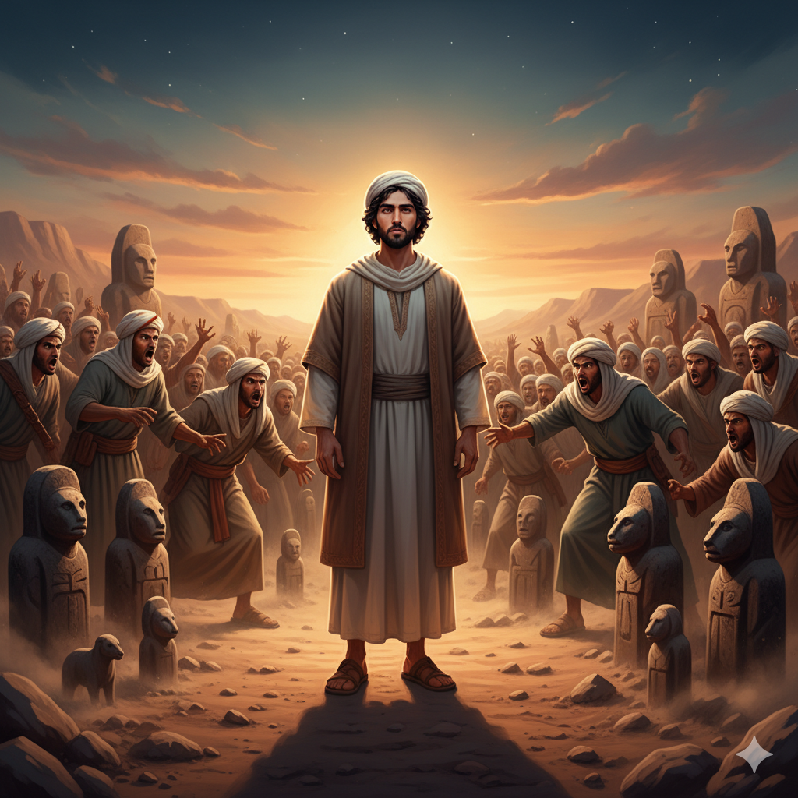
الفصل الأول: البداية الإبراهيمية
قبل أن يولد النبي ﷺ بقرونٍ طويلة،
كانت الأرض تستعد لظهور الرسالة، دون أن يدري أهلها.
وكانت البداية ليست من مكة، بل من قلب رجلٍ واحد:
إبراهيم عليه السلام.
رجلٌ وقف وحده في وجه عالمٍ كامل.
عاش بين قومٍ يعبدون ما يصنعون بأيديهم،
لكن قلبه لم يستطع أن يسجد إلا لله وحده.
كان يبحث عن الحقيقة لا لأن أحدًا طلب منه،
بل لأنه شعر أن الروح لا تهدأ إلا حين تعرف ربها.
هاجر إبراهيم من قومه، من بيته، من كل ما يملك،
لكنّه لم يهاجر من أجل هروب،
بل هاجر من أجل لقاء.
لقاء مع أمر الله.
وهناك… في وادٍ قاحلٍ لا نبات فيه ولا ماء،
أخذ إبراهيم زوجته هاجر وطفلها إسماعيل،
ووضعهما عند بيتٍ لم يُبنَ بعد، ولا أحد يسكن حوله.
ثم استدار وتركهما، دون أن يشرح شيئًا.
نادته هاجر:
– يا إبراهيم! أالله أمرك بهذا؟
فقال بثبات:
– نعم.
فقالت:
– إذن لن يضيعنا.
لم تكن تلك جملةً عادية،
كانت **مدرسة إيمان كاملة**.
الإيمان ليس كلامًا… بل ثقة.
ولم تكن تعرف أن الله سيجعل من خطواتها نورًا،
ومن سعيها في الوادي تاريخًا،
ومن صبرها معجزة اسمها زمزم.
مرت الأيام،
وكبر إسماعيل،
وجاء إبراهيم يرى ابنه بعد طول غياب.
وفي إحدى الليالي… رأى في المنام أنه يذبحه.
وكأن الله يقول له:
"هل تحبني يا إبراهيم؟"
فقال بعمله قبل لسانه:
"نعم، أكثر من كل شيء."
لم يكن الاختبار لإسماعيل،
بل لقلب أبيه.
ومن يسلّم قلبه… لا يُكسره الله أبدًا.
ولما اكتمل التسليم،
رفع إبراهيم السكين،
لكن الله لا يريد دمًا،
الله يريد **قلبًا صادقًا**.
فقال سبحانه:
﴿ وَفَدَيْنَاهُ بِذِبْحٍ عَظِيمٍ ﴾
لم يكن الفداء مجرد كبش…
كان إعلانًا:
أن الدين هذا **دين الرحمة**،
لا دين الدم.
ومع مرور الزمن،
عاد إبراهيم وإسماعيل يبنيان بيتًا لله،
بيتًا سيقف عنده البشر من كل مكان،
يبكون، يدعون، يسجدون.
رفع إبراهيم القواعد،
وإسماعيل يناوله الحجارة،
والاثنان يقولان:
﴿ رَبَّنَا تَقَبَّلْ مِنَّا ﴾
وفي تلك اللحظة،
رفع إبراهيم رأسه وقال الدعاء الذي لم تُجب آثاره إلا بعد آلاف السنين:
> ﴿ رَبَّنَا وَابْعَثْ فِيهِمْ رَسُولًا مِنْهُمْ ﴾
لم يكن يعرف اسمه،
ولا زمنه،
ولا شكله،
لكنه كان يعرف أنه سيكون:
**رحمةً للعالمين**.
وبعد قرونٍ طويلة…
سيولد ذلك الرسول في مكة،
من نسل إسماعيل،
استجابة لدعاء قاله إبراهيم بقلبٍ مطمئن،
أنه لا شيء يضيع عند الله.
وهكذا،
لم تبدأ السيرة من ميلاد محمد ﷺ،
بل بدأت من **قلبٍ صدق الله**،
فصنع الله به تاريخًا جديدًا.
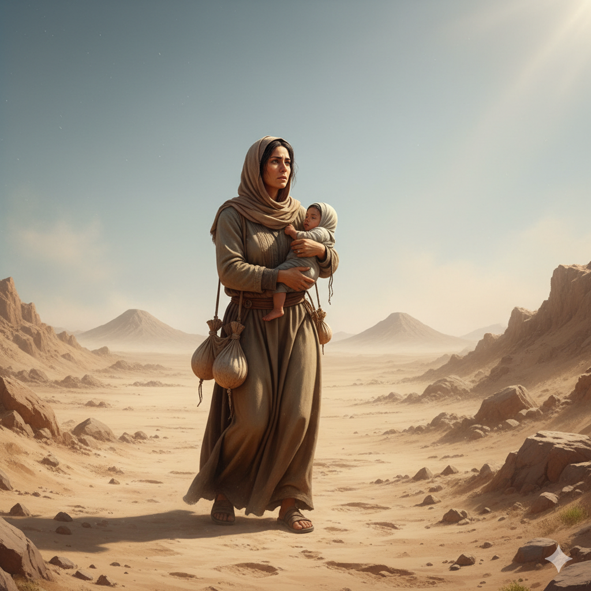
الفصل الثاني: شجرة النسب النبوي
لم يكن اختيارُ النبي ﷺ صدفة،
ولا كان مولده حدثًا عابرًا في التاريخ.
كان كل شيء مرتبًا منذ البداية،
منذ أن رفع إبراهيم وإسماعيل القواعد الأولى للبيت.
حين دعا إبراهيم عليه السلام:
﴿ رَبَّنَا وَابْعَثْ فِيهِمْ رَسُولًا مِنْهُمْ ﴾
لم يكن يدعو لنفسه،
ولا لزمنه،
بل كان يدعو لأمةٍ ستأتي بعده بقرونٍ طويلة.
ومن نسل إسماعيل عليه السلام،
بدأت شجرة طويلة تنمو،
شجرة لا تُعرف بالقوة أو الثروة أو الحكم،
بل بالصدق، والأمانة، والنقاء.
في مكة، وُلدت قبيلة لها شأن عظيم:
**قريش**.
لم تكن أقوى القبائل،
لكنها كانت الأكثر احترامًا،
لأنها كانت تجمع الناس حول البيت،
وتخدم الحجاج،
وتحافظ على تقاليد الكرم والوفاء.
ومن بين بطون قريش كان **بنو هاشم**.
بيتٌ كان يُعرف بأن بابه لا يُغلق،
وأن جائعًا لا يخرج منه دون أن يشبع.
كانوا لا يملكون الذهب،
لكنهم كانوا يملكون **القلب**.
وجاء عبد المطلب،
الرجل الذي أعاد زمزم للحياة،
ونصره الله حين حاول أبرهة هدم الكعبة،
ليُفهم الناس أن هذا البيت ليس ملكًا لأحد،
بل لله وحده.
وفي يومٍ من الأيام،
ولد لعبد الله بن عبد المطلب ولدٌ،
ولدٌ لم ير أباه،
لكن نور أبيه كان فيه.
سماه جدّه:
**محمد**.
اسم لم يكن مألوفًا في العرب،
كأن القدر يهيئ الناس ليسمعوا هذا الاسم كثيرًا فيما بعد،
حتى يملأ الدنيا.
لكن قبل أن يُولد محمد ﷺ،
كانت هناك حكمة عظيمة في اختيار هذا النسب:
الله اختار نسبًا:
- لا يعبد الأصنام بصدق،
- ولا يظلم ضعيفًا،
- ولا يخون عهدًا.
اختار بيتًا لا يعرف الخيانة،
ليولد فيه من سيحمل أمانة السماء.
اختار بيت رحمة،
ليأتي منه:
**رحمة للعالمين**.
وهكذا،
لم يكن نسب النبي شرفًا اجتماعيًا،
بل كان **تهيئة إلهية**،
تربية ربانية،
تاريخًا كاملًا
يتحرك ليصل إلى لحظة واحدة:
لحظة يولد فيها نورٌ
سيغيّر وجه الأرض.
فكما لم تكن الرسالة صدفة،
لم يكن صاحبها صدفة.
لقد اختاره الله…
قبل أن يعرفه الناس.
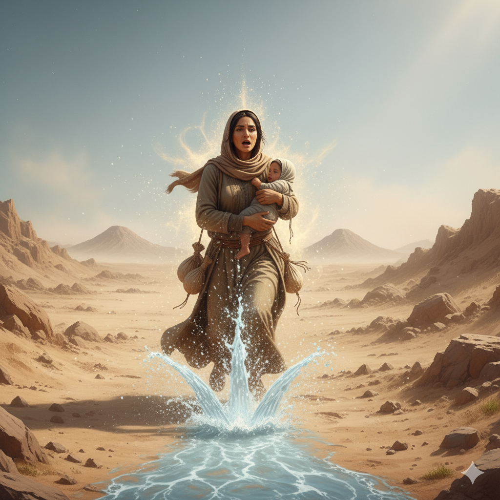
الفصل الثالث: لماذا احتاج العالم إلى محمد ﷺ؟
لم يأتِ النبي ﷺ إلى عالمٍ مستقر،
ولا إلى أمةٍ تعرف الله وتعبده حقًا.
بل جاء في لحظة كان فيها التاريخ كله يصرخ،
لكن لا أحد يسمع.
كان العالم مقسمًا إلى قوتين كبيرتين:
الفرس والروم.
إمبراطوريات ضخمة،
لكنها من الداخل كانت منهكة:
ظلم، حروب، صراعات على السلطة،
وشعوب لا تعرف لماذا تعيش.
أما العرب،
فكانوا يعيشون في الجزيرة بعيدًا عن تلك الجيوش.
لكنهم لم يكونوا أفضل حالًا:
كانوا يعظمون الشرف،
لكنهم يعبدون الأصنام.
يكرمون الضيف،
لكنهم يدفنون البنات خوفًا من العار.
كانت القلوب قوية،
لكنها بلا نور.
كل قبيلة كانت أمة وحدها،
وكل رجل كان قانون نفسه.
لا حاكم يوحّد،
ولا كتاب يرشد،
ولا عقيدة تهدي.
وفي مكة كانت الكعبة قائمة،
لكنها محاطة بالأصنام.
البيت الذي بناه إبراهيم لعبادة الله،
صار مكانًا لعبادة الحجارة.
الناس كانوا يصلّون،
لكنهم لا يعرفون لمن.
يذبحون،
لكنهم لا يعرفون لماذا.
يتكلمون عن الشرف،
لكنهم يظلمون الضعيف.
أما في البيوت،
فكان الألم صامتًا:
أم تبكي ابنتها التي دُفنت،
ورجل يشرب ليهرب من واقعه،
وقلب يبحث عن معنى لا يجده.
وفي الأسواق،
كان القوي يأكل الضعيف،
والغني لا يرى الفقير،
والأمانة مجرد كلمة في الشعر.
لم يكن العالم مظلمًا لأن الناس أشرار،
بل لأنهم:
لم يعرفوا الطريق.
ولم يكن ينقصهم الذكاء،
ولا اللغة،
ولا القوة،
كان ينقصهم:
**الرسالة**.
رسالةٌ تقول لهم:
- لماذا خُلقتم؟
- وإلى أين تذهبون؟
- وما معنى أن تكون إنسانًا؟
ولم يكن أحد مؤهلاً لحمل هذه الرسالة
إلا أمةٌ قلبها قوي،
وروحها حرة،
ولسانها قادر على حمل المعاني.
أمة العرب كانت تنتظر،
حتى وإن لم تشعر.
وكأن الزمن كله كان يمشي نحو لحظة واحدة:
لحظة يولد فيها محمد ﷺ.
لأن العالم…
لم يكن يحتاج حاكمًا،
ولا فيلسوفًا،
ولا قائدًا عسكريًا.
كان يحتاج:
رجلًا يوقظ القلب.
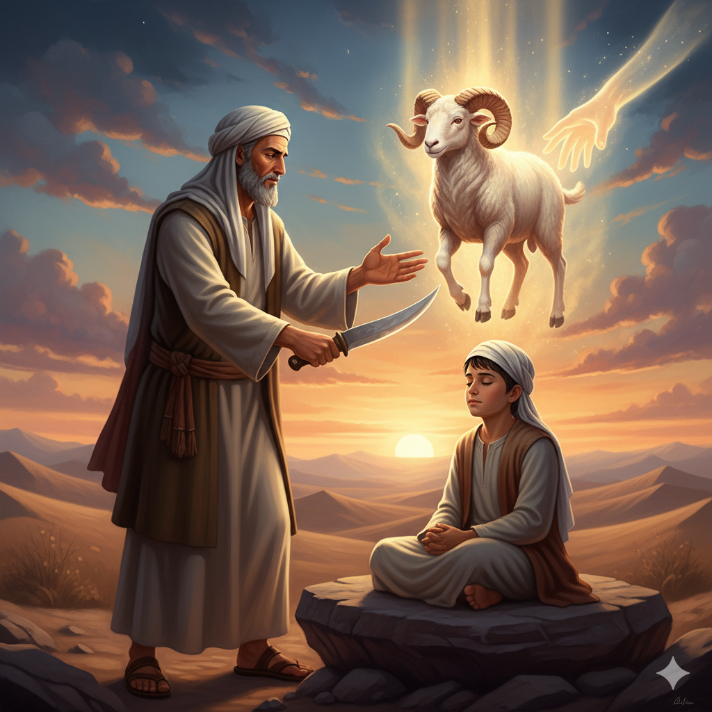
الفصل الرابع: ميلاد النبي ﷺ
كانت مكة في تلك الليلة هادئة كعادتها،
البيوت من طينٍ وحجر،
والسماء صافية كأنها تنتظر شيئًا لا يعرفه الناس.
وفي بيتٍ صغير من بيوت بني هاشم،
كانت آمنة بنت وهب تحمل طفلًا في رحمها،
طفلاً لم يره أحد بعد،
لكن نوره كان يسير معها حيث ذهبت.
آمنة لم تكن تتزين بالكثير من الكلام،
ولا يعرف الناس عنها إلا الطهر والهدوء.
كانت تشعر أن في بطنها شيئًا مختلفًا،
ليس اختلاف جسد،
بل اختلاف قلب.
وذات ليلة…
قالت كأنها ترى ولا ترى:
"كأن نورًا خرج مني فأضاء قصور الشام."
لم تكن تعرف تفسير ذلك،
ولم تسعَ لأن تعرف.
كان في داخلها يقين هادئ،
لا يحتاج إلى برهان.
وفي يوم الإثنين،
الثاني عشر من ربيع الأول،
جاء الموعد الذي كتب منذ قرون.
وُلد محمد ﷺ
هادئًا،
لا صراخ ولا اضطراب،
كأن الدنيا كانت تنتظر أن يتنفس.
أخذه عبد المطلب بين يديه،
ونظر إليه طويلًا،
ثم رفعه إلى السماء وقال:
"سأسميه محمدًا."
اسمٌ لم يكن معروفًا عند العرب تقريبًا.
لم يكن هناك سبب دنيوي لاختياره.
لكن القدر كان يهيئ الأذن،
لتعتاد اسم:
سيُقال في كل لحظة،
على كل أرض،
إلى آخر الزمن.
ولم يكن للنبي أبٌ يراه،
فأبوه عبد الله كان قد مات قبل ولادته.
لكن الله كان يربيه منذ اللحظة الأولى،
ليعلّم العالم:
أن اليتيم عند الله ليس وحده،
وأن العظمة لا تحتاج سندًا من بشر.
نشأ النبي ﷺ
لا يعرف عبدًا يملكه،
ولا تاجًا يحيطه،
ولا قصرًا يسكنه.
كان قلبه أغنى من كل ذلك.
كانت مكة من حوله تمتلئ بالأصنام،
لكنه لم يسجد لصنمٍ يومًا.
وكانت المجالس تمتلئ بالشعر والفخر،
لكن لسانه لم يعرف الكبر.
كان يرى الناس،
يسمعهم،
يفهمهم،
ويحمل في قلبه شيئًا لا يشبه أحدًا:
الرحمة.
كل من رآه صغيرًا،
كان يقول:
"هذا الطفل ليس مثل غيره."
لكنهم لم يكونوا يعرفون ماذا سيكون.
كانوا فقط يشاهدون البذرة الأولى:
بذرة رجل…
سيغير وجه الأرض.
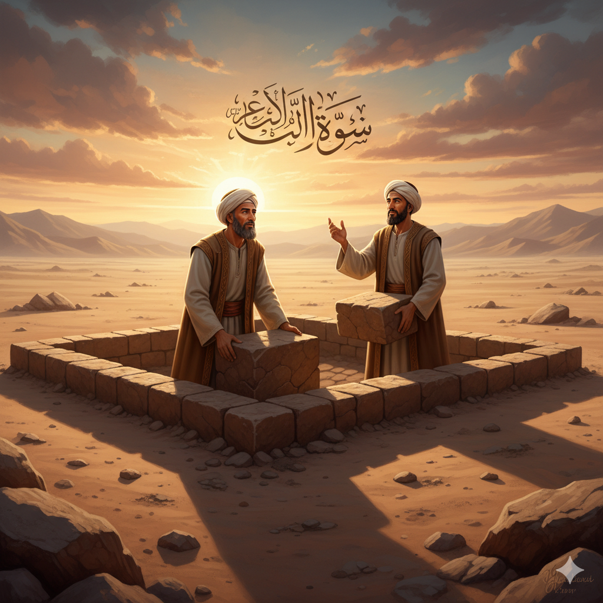
الفصل الخامس: إعداد النبي قبل الرسالة
لم يكن إعداد النبي ﷺ لحمل الرسالة حدثًا مفاجئًا،
ولا كان وحي الغار بداية الطريق،
بل كان الطريق ممتدًا من طفولته الأولى،
محكمًا بخطوات دقيقة، تراها بسيطة،
لكنها كانت تصنع رجلًا سيقود قلوب البشر.
بعد وفاة أمه آمنة،
احتضنه جده عبد المطلب،
ثم عمه أبو طالب.
لم يكن في بيتهم ثراء،
لكن كان فيه ما هو أعظم:
الرحمة والكرامة.
نشأ النبي ﷺ وهو يرى الناس يتفاخرون بالنسب والمال،
لكن قلبه كان ينصرف عن ذلك،
لينشغل بما هو أعمق:
كيف يُعاش الإنسان بصدق؟
كان يرعى الغنم.
والناس قد يرون رعي الغنم عملاً بسيطًا،
لكن الصحراء لها أسرار:
تعلم فيها الصمت،
والتفكير،
والنظر للكون وكأنه كتاب مفتوح.
تعلم أن يقود بلا قسوة،
وأن يحفظ الضعيف،
وأن يكون صبورًا أمام كل شيء.
ثم عمل في التجارة.
لم يتعلّم التجارة فقط،
بل تعلّم الأمانة.
كان إذا وعد وفّى،
وإذا باع لم يخدع،
حتى صار الناس يسمونه:
**الصادق الأمين**.
اسمٌ لم يأخذه من معركة،
ولا من لقبٍ ورثه،
بل أخذه من قلب الناس.
كان يرى الأسواق تمتلئ بالظلم،
ومجالس العرب تمتلئ بالكبرياء،
والبيوت تمتلئ بالخلاف،
فشعر أن هناك شيئًا ناقصًا،
شيئًا لا يملأه المال ولا القوة.
وحين كَبُر،
كان يحب الخلوة.
لا لأنها هروب،
بل لأنها بحث.
كان يصعد غار حراء،
يجلس في صمت الليل،
ويراقب السماء العالية.
كأن قلبه كان يسمع شيئًا لا يسمعه غيره.
لم يكن معه كتاب يقرأه،
ولا عالم يعلّمه،
ولا نبيٌ يرشده.
لكن الله كان يربيه مباشرة،
بهدوء لا يشعر به أحد.
كان يشعر أن الكون ليس عبثًا،
وأن القلب لا يُخلق بلا حكمة.
كان يبحث عن معنى أكبر،
معنى يكون للروح وطنًا.
وفي نفس الوقت،
كان يعيش بين الناس:
يصل الرحم،
يحمل الضعيف،
يحكم بين المتخاصمين،
ويعطي الفقير دون أن يراه أحد.
كان واقعيًا في قلب الحياة،
وروحيًا في أعماقها.
لم يكن ملاكًا بعيدًا عن العالم،
ولا رجلًا عاديًا غارقًا في الدنيا.
كان قلبًا يسير بين الناس،
وعينه على السماء.
وهكذا…
قبل أن ينزل الوحي،
كان كل يوم من حياته
يبني لبنةً في الرسالة القادمة.
فلما جاء جبريل في الغار،
لم يكن الأمر بدايةً جديدة،
بل كانت:
اللحظة التي اكتمل فيها إعداد الروح.
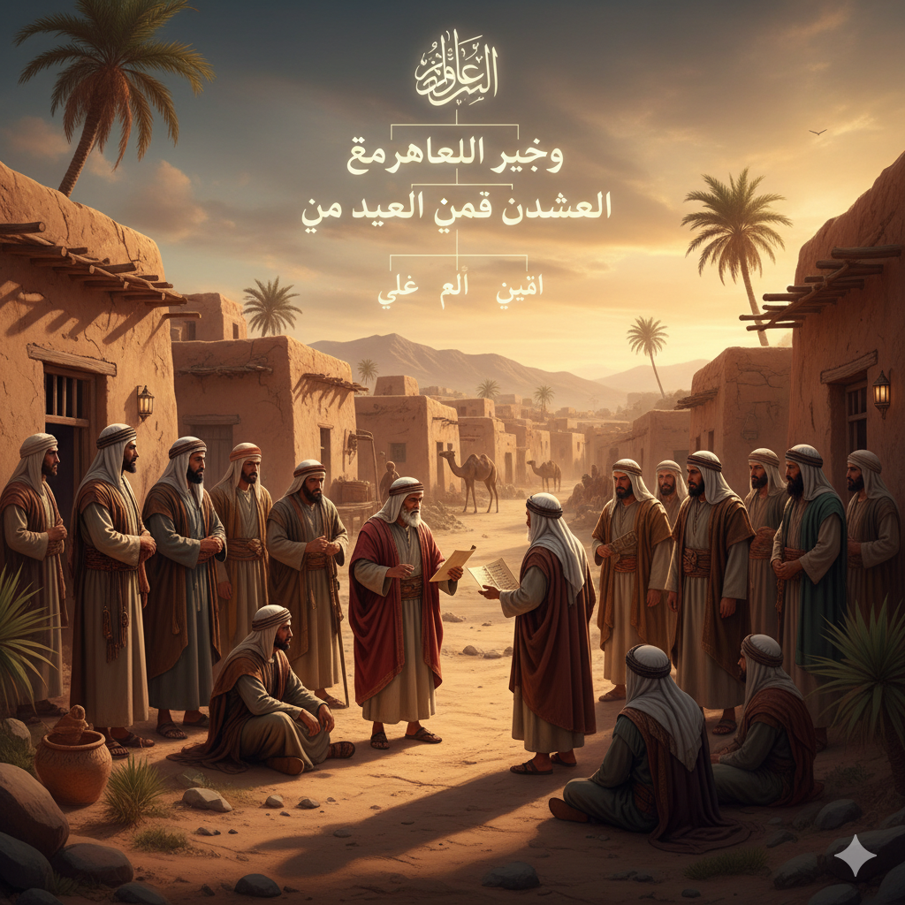
الفصل السادس: زواج النبي ﷺ من خديجة
كبر محمد ﷺ، وكبرت معه صفاته.
لم يكن مجرد شاب يعيش بين قومه،
بل كان كل من يراه يشعر أنه مختلف في شيء،
شيء لا يُقال بالكلمات، بل يُرى في السلوك.
وفي مكة كانت هناك امرأة كريمة تُدعى:
**خديجة بنت خويلد**.
كانت ذات عقل راجح، وتجارة واسعة، وسمعة لا تشوبها شائبة.
وكان الناس يلقبونها:
"الطاهرة".
كانت تسمع عن محمد ﷺ كما يسمع الناس جميعًا:
شاب لا يكذب،
ولا يخون،
ولا يرفع صوته بباطل.
فلما أرادت أن ترسل تجارة إلى الشام،
اختارته ليكون أمينًا عليها.
سافر بمالها،
وعاد بربحٍ لم يكن متوقعًا،
لكن الربح لم يكن هو الذي أثار عجبها،
بل حديث غلامها ميسرة عن صدقه،
وهدوئه،
وأمانته،
ونور وجهه.
كانت خديجة امرأة تعرف الرجال،
وتعرف أن الشرف لا يُكتب،
بل يُرى.
فأرسلت إليه من يتوسط في الزواج.
لم يطلب مالًا،
ولا منصبًا،
ولا جاهًا.
كان الزواج بينهما هادئًا،
لا صخب فيه ولا تفاخر،
وبدأ بيت صغير في مكة،
لكنه كان **أطهر بيتٍ عرفه الزمان**.
كانت خديجة سندًا،
لا بالكلام،
ولكن بالفعل.
حين كان الناس يبدأون حياتهم بأحلام الثروة،
كان هو يبدأ حياته بطمأنينة في قلبه،
وسكينة في بيته.
وفي السنوات التي سبقت نزول الوحي،
كانت خديجة ترى في زوجها شيئًا يتغير،
كان يخرج إلى غار حراء كثيرًا،
يتأمل، يفكر، ويسأل.
لم تقل له يومًا:
"لماذا تذهب؟"
ولم تطلب منه أن يخفف،
بل كانت تسنده بصمتٍ يفهمه القلب.
وعندما نزل جبريل لأول مرة،
ورجع النبي ﷺ يرتجف،
كانت خديجة أول من ضمه إلى صدر الأمان،
وقالت له الكلمات التي حفظها التاريخ:
> "والله لا يخزيك الله أبدًا."
كانت تعرفه،
وتعرف أن الله لا يخذل قلبًا طاهرًا،
ولا يدع من يحمل الخير يسقط.
لم تكن خديجة مجرد زوجة،
كانت:
- البيت
- السند
- الاطمئنان
- أول من آمن
- وأول قلبٍ فهم الرسالة قبل أن تُعلن.
وهكذا،
بدأت الرسالة في بيتٍ تأسس على:
**المحبة والصدق والسكينة**.
لا على القوة ولا على المال.
بيت… كان النور يأتي إليه قبل أن ينزل إلى العالم.
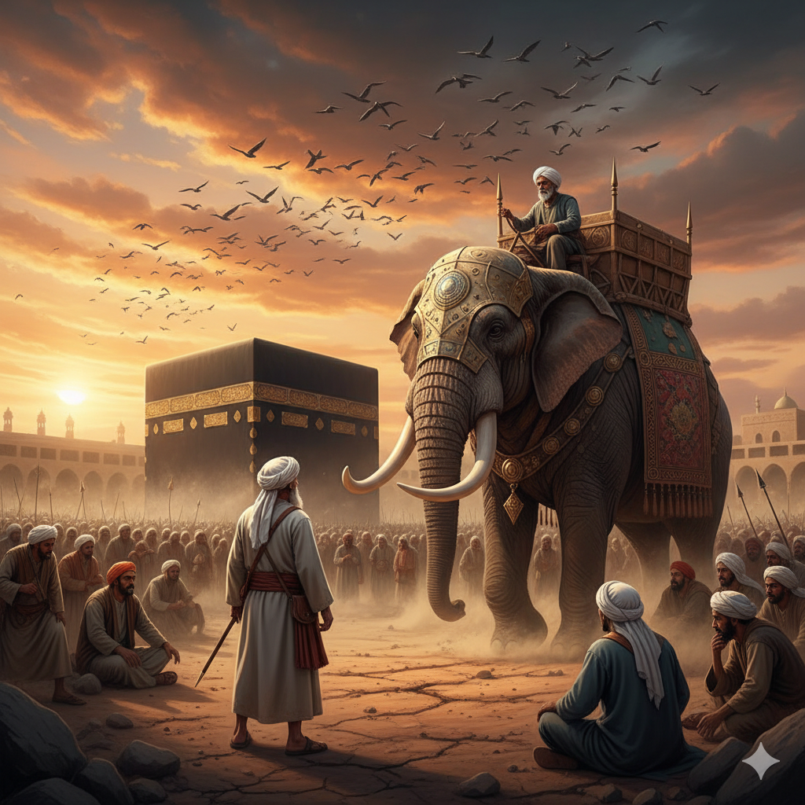
الفصل السابع: الكون يستعد لظهور النبي ﷺ
لم يأتِ النبي ﷺ فجأة.
ولم يكن ظهوره حدثًا منفصلًا عن حركة التاريخ.
كان العالم كله يتحرك نحو لحظة معينة،
كأن الزمن كان يعرف موعده،
والقلوب كانت تنتظره دون أن تدرك.
في ذلك الوقت،
كانت هناك قوتان تحكمان الأرض:
الروم في الغرب،
والفرس في الشرق.
ملوك وقصور وجيوش،
لكن خلف الستار كان هناك تعبٌ كبير.
انتشرت الحروب طويلًا،
حتى تعب البشر من القتال.
وضعُ الناس كان يشبه أرضًا جافة،
تنتظر ماءً لا يأتي.
أما في الجزيرة العربية،
فلم تكن هناك مملكة قوية ولا جيش عظيم،
لكن كان هناك شيء أهم:
الحرية.
كان العرب أحرارًا في اختيار الطريق،
حتى لو كان الطريق قاسيًا.
لم تكن الجزيرة تملك حضارة مثل الفرس والروم،
لكنها كانت تملك:
اللغة،
القلب،
والفطرة.
وكانت هذه الفطرة تحتاج من يعيد توجيهها إلى السماء.
وفي مكة،
كانت الأصنام حول الكعبة كثيرة.
لكن كان هناك رجل كبير في السن،
إذا نظر إلى السماء شعر أن الحقيقة قريبة،
وكان يقول لمن حوله:
"اللهم لو أني أعلم أحب الوجوه إليك عبدتك به."
كان هذا الرجل اسمه:
**زيد بن عمرو بن نفيل**.
رجل لم يسجد لصنم،
وكان يبحث عن الله وحده.
وكان ذلك علامة،
أن القلوب بدأت تستيقظ.
وفي نفس تلك السنوات،
كان علماء اليهود والنصارى ينتظرون نبيًا جديدًا.
كانت الكتب عندهم تشير إلى زمانه،
وإلى مكانه،
وإلى الحرم الذي سيهاجر إليه.
ومع ذلك…
انتظروه،
لكن معظمهم لم يستقبله.
أما العرب،
فكانوا لا يعرفون هذه الكتب،
لكنهم كانوا مستعدين بطرق أخرى:
- الصدق كان قيمة عندهم،
- والوفاء شرفًا،
- والكرم حياةً.
كل ذلك كان أرضًا صالحة لرسالة ستربي الروح قبل الجسد.
ثم جاءت العلامات:
• انطفأت نار الفرس التي لم تنطفئ ألف عام.
• وغاضت بحيرة طبرية.
• واهتز عرش كسرى.
وأحس الناس – دون أن يعرفوا لماذا –
أن شيئًا كبيرًا يقترب.
وفي مكة…
لم تكن خديجة ولا محمد ﷺ يعرفان أن العالم كله يتهيأ لهما.
كان كل شيء يبدو عاديًا،
لكن الله كان ينسج اللحظات بصبرٍ عظيم،
ينسجها ليجعل من رجلٍ واحد
نقطة نورٍ تغير وجه الأرض.
حتى جاءت اللحظة.
لحظة سيقف فيها رجل في غار صغير،
بين صمت الليل،
وسكون الجبل،
وينزل من السماء صوت يقول:
> "اقرأ."
وكان ذلك بداية عهدٍ جديد للإنسان.
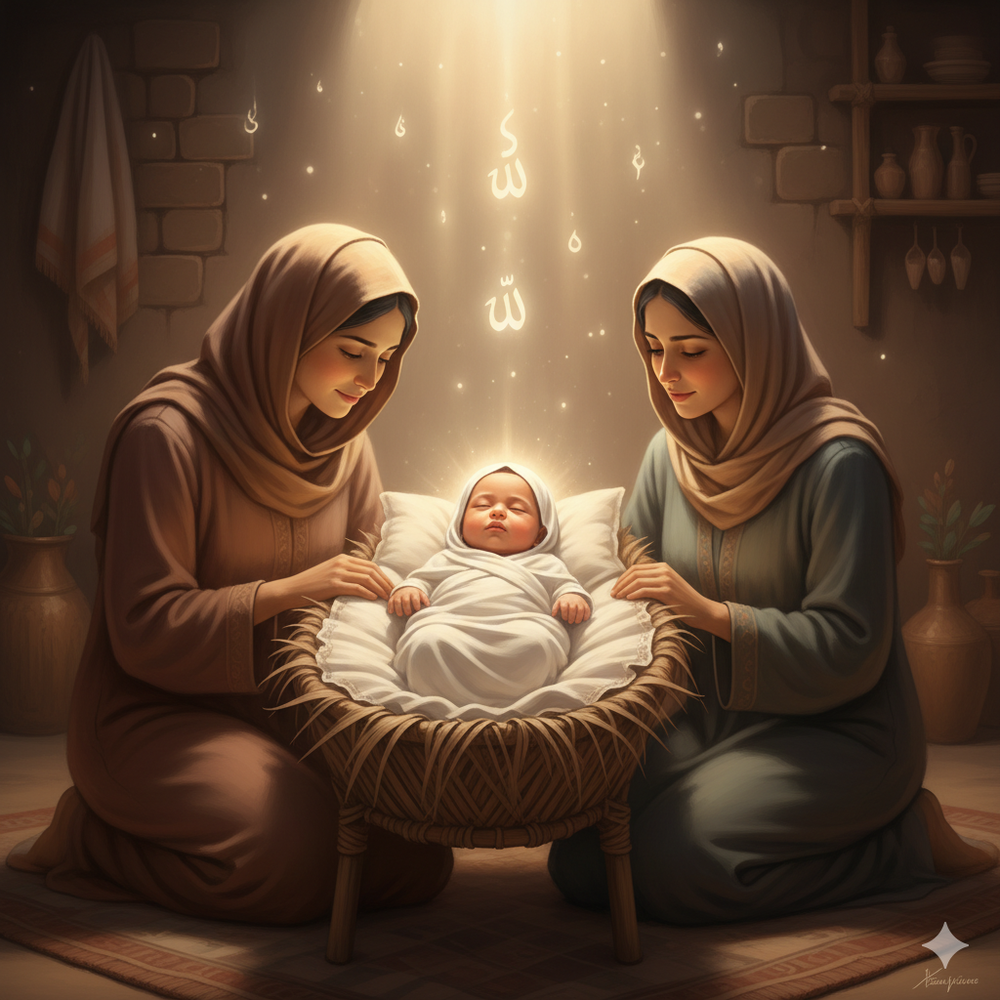
الفصل الثامن: بدء الوحي
كان الليل ساكنًا فوق جبل حراء،
والمدينة الصغيرة تحت الجبل نائمة،
إلا قلبًا واحدًا كان مستيقظًا.
جلس محمد ﷺ في الغار،
لا يهرب من الدنيا،
بل يبحث عن معناها.
كان ينظر إلى النجوم في السماء،
كأنها رسائل معلّقة،
وفي داخله سؤال لا يفارقه:
هل كل هذا بلا حكمة؟
هل خُلق الإنسان دون غاية؟
كان يشعر أن الحقيقة قريبة،
قريبة جدًا،
لكن لا كلمة تصفها،
ولا عقل يمسكها.
وفي تلك الليلة…
لم يكن في الغار وحده.
فجأة،
امتلأ المكان بنورٍ لا يشبه نور الشمس،
ولا ضوء القمر،
نور يجعل العين ترى،
والروح تسجد.
وقف أمامه جبريل عليه السلام.
لم يره كفكرة،
ولا كخيال،
بل كواقع لا يمكن الفرار منه.
اقترب منه،
وقال بصوتٍ يحمل قوة السموات:
"اقرأ."
لم يكن النبي ﷺ قد تعلّم القراءة،
ولم يحاول أن يدّعي ما لا يعرف.
قال بصدق الإنسان أمام ما يعجز عنه:
"ما أنا بقارئ."
فأخذه جبريل،
وضمه ضمةً شعر معها أن الحياة كلها تضيق،
ثم تتسع من جديد،
وقال مرة أخرى:
"اقرأ."
مرة ثالثة…
"اقرأ."
ثم نزل الوحي الأول،
كأنه مفتاح فتح الباب الذي ظل القلب يبحث عنه طويلًا:
> ﴿ اقْرَأْ بِاسْمِ رَبِّكَ الَّذِي خَلَقَ ﴾
> ﴿ خَلَقَ الْإِنسَانَ مِنْ عَلَقٍ ﴾
> ﴿ اقْرَأْ وَرَبُّكَ الْأَكْرَمُ ﴾
لم تخبره الآيات شيئًا جديدًا عن الكون،
بل ذكّرته بما كان يعرفه قلبه دون كلمات:
أن الوجود ليس صدفة،
وأن الإنسان ليس تائهًا،
وأن الله أقرب مما يظن الناس.
نزل محمد ﷺ من الجبل،
والليل كما هو،
لكن كل شيء في داخله تغيّر.
لم يركض ليخبر الناس،
ولم يبحث عن تصفيق،
بل ذهب إلى البيت.
إلى خديجة.
فتح الباب،
وكان صوته يرتجف من عظمة ما رأى:
"زملوني… زملوني…"
لم تسأله خوفًا،
ولا ضغطت عليه بكلام،
بل وضعت يدها على قلبه،
وهي التي كانت تعرفه حق المعرفة.
وقالت الكلمات التي حفظها التاريخ:
"والله لا يخزيك الله أبدًا."
لم تكن النبوة في الجبل فقط،
بل كانت أيضًا
في بيتٍ آمن،
وفي امرأةٍ فهمت معنى السند.
ومن تلك الليلة،
بدأ النور يعود إلى العالم،
لا بضجيج،
بل بخطوات هادئة
تفتح القلوب قبل أن تغيّر الأرض.

الفصل التاسع: الدعوة السرية
بعد نزول الوحي،
لم ينادِ النبي ﷺ الناس من فوق الجبل،
ولم يذهب إلى الأسواق ليعلن رسالته.
كان الأمر أعظم من أن يبدأ بصوتٍ عالٍ.
كان لابد أن يبدأ من القلب،
من الداخل،
من تأسيس الإنسان.
فبدأ يدعو الأقربين،
يدعو من يعرفهم جيدًا،
ويعرفون صدقه قبل كلامه.
وكان أول من آمن:
**خديجة**،
التي لم تسأل دليلًا،
لأن القلب الذي يعرف الصدق لا يحتاج إلى دليل.
ثم **أبو بكر الصديق**،
رجل لا يشك،
ولا يتردد عندما يرى الحق.
كان يعرف محمدًا قبل الرسالة،
ويعرف أنه لا يكذب.
ولم تكن كلمة "آمنت" عند أبي بكر كلمة عابرة،
بل كانت بداية حركةٍ غيّرت التاريخ.
ثم جاء **علي بن أبي طالب**،
طفل في العاشرة،
لكن قلبه كان أنقى من أن يتردد.
رأى النور،
فاتّبعه.
ثم **زيد بن حارثة**،
الذي اختار أن يعيش مع النبي ﷺ بإرادته،
فلما جاء الإسلام،
اختار أن يصدق من أحب.
لم تكن الدعوة سهلة،
ولا كان المجتمع مستعدًا.
كانت الأصنام جزءًا من الحياة،
والتقاليد أقوى من العقل.
لذلك كانت الدعوة في السر.
لمدة ثلاث سنوات كاملة،
لم يعرف بها إلا قلوب قليلة،
تتجمع ليلًا بعيدًا عن عيون قريش.
كانوا يصلون مع النبي ﷺ في شعاب مكة،
بعيدًا عن الأصنام،
بعيدًا عن الصخب.
كان ذلك المجتمع صغيرًا،
لكن كان فيه شيء لا يوجد في أي مجتمع آخر:
الصدق.
لم يكن أحد منهم يدخل الدين لأجل منصب،
ولا مال،
ولا قوة.
كانوا يدخلون لأن قلوبهم وجدَت ما كانت تبحث عنه.
وفي هذا الزمن الخفي،
كان النبي ﷺ يبني:
- الإيمان قبل الدولة،
- واليقين قبل العمل،
- والإنسان قبل المجتمع.
لم يكن الهدف تغيير الدنيا فورًا،
بل تغيير النفوس أولًا.
وهذه كانت الحكمة:
كل شيء يبدأ من الداخل،
قبل أن يظهر في الخارج.
وظلت الدعوة تكبر بهدوء،
مثل بذرة تحت التراب،
لا يراها أحد،
لكنها تستعد لوقتٍ ستشق فيه الأرض،
وتظهر،
وتملأ الدنيا حياة.
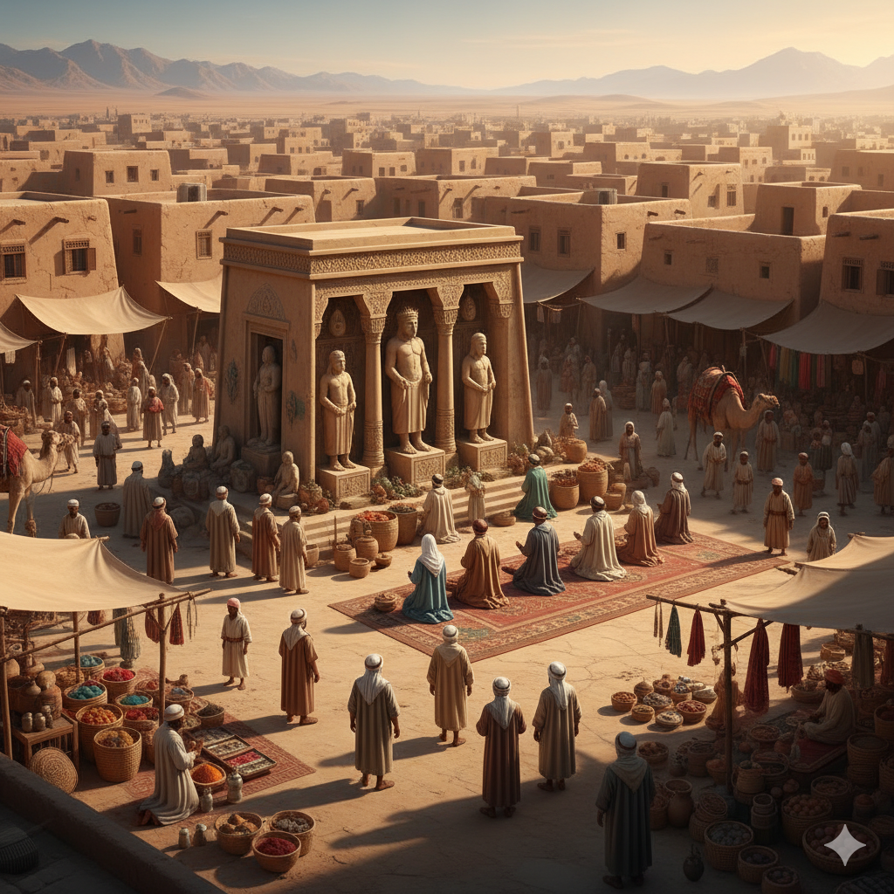
الفصل العاشر: الدعوة الجهرية
مرت ثلاث سنوات والدعوة تسير في الخفاء.
قلوب قليلة، لكنها ثابتة.
إيمان يزداد عمقًا،
وصحبة تتربّى على الصدق قبل القوة.
ثم جاء الأمر من السماء:
﴿وَأَنْذِرْ عَشِيرَتَكَ الْأَقْرَبِينَ﴾.
لم يكن الأمر سهلاً.
فقريش لم تكن ترى الدين فكرة،
بل كانت تراه نظامًا اقتصاديًا واجتماعيًا وسياسيًا.
وتغيير الدين عندهم يعني تغيير كل شيء.
لكن الدعوة لا تنتظر إذن أحد.
صعد النبي ﷺ على جبل الصفا،
ونادى القبائل باسمها:
"يا بني فِهر، يا بني عدي، يا بني هاشم..."
اجتمع الناس،
فقال لهم بصوتٍ يعرفونه منذ الطفولة:
"لو أخبرتكم أن خيلًا خلف هذا الجبل تريد أن تغير عليكم،
أكنتم مصدقي؟"
قالوا جميعًا:
"ما جربنا عليك كذبًا قط."
فقال:
"إني نذير لكم بين يدي عذاب شديد."
لم يصرخ،
لم يهدد،
لم يفرض.
بل قال الحقيقة كما هي.
لكن الحقيقة لم ترحب بها القلوب جميعًا.
كان أول من رد عليه:
عمه **أبو لهب**.
لم يجادل،
لم يبحث،
لم يسأل.
بل قال كلمات حادة:
"تبًا لك ألهذا جمعتنا!"
كان هذا هو بداية الصراع.
لم يكن الصراع بين الإيمان والكفر فقط.
كان بين:
- قلبٍ يعرف الحق ويتبعه
- وقلبٍ يراه لكن يخاف من خسائر الدنيا
بدأت قريش تحارب الدعوة:
بالسخرية أولًا.
فمن لا يقدر أن ينكر الحقيقة،
يحاول أن يضحك عليها.
ثم اتهموه بالسحر،
ثم قالوا شاعر،
ثم كاهن.
تبدلت التهم،
لكن الحقيقة ثابتة:
هم يعرفون صدقه،
لكنهم خافوا من تغييرٍ يمس مصالحهم.
أما المؤمنون من الطبقات الضعيفة،
فكانوا الأكثر تعرضًا للأذى.
لأنهم لا يملكون قبيلة تدافع عنهم.
كان بلال يُعذَّب في صحراء مكة،
والصخرة الثقيلة على صدره،
وهو لا يقول إلا كلمة واحدة:
"أحد. أحد."
لم يكن بلال يحفظ كتبًا،
ولا خطبًا،
ولا فلسفة.
لكن قلبه عرف الله،
فاستراح إليه.
وهنا تظهر الحكمة:
الإيمان الحقيقي لا يحتاج قوة،
بل يحتاج **صدقًا**.
ومع ازدياد الأذى،
لم يتراجع النبي ﷺ،
ولم يفقد صبره.
كان يعلم أن كل بناءٍ كبير،
يبدأ من اختبار،
وكل نورٍ عظيم،
يولد من مكانٍ مظلم.
وهكذا،
بدأ صوت الإسلام يسمع لأول مرة في مكة،
ليس كصوتٍ عالٍ فقط،
بل كحقيقةٍ لا يمكن إسكاتها.
لقد خرج النور من الخفاء،
وبدأت الرحلة في مواجهة العالم.
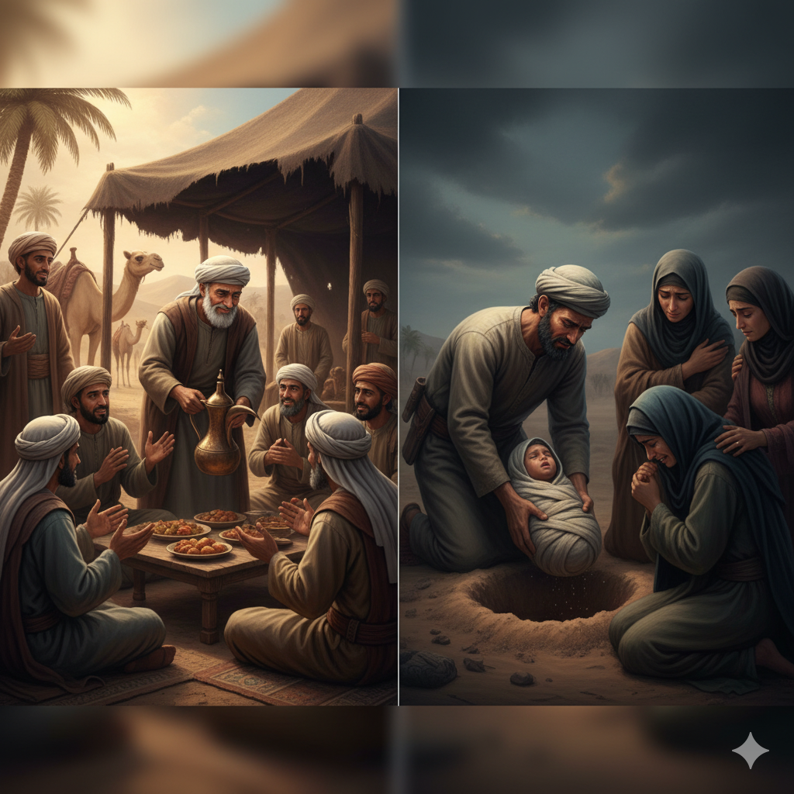
الفصل الحادي عشر: الهجرة إلى الحبشة
اشتدّت قريش في محاربتها للدين الجديد.
لم تعد الكلمات الساخرة تكفي.
بدأت الأيدي تضرب،
والقلوب تقسو،
والناس يُعذَّبون فقط لأنهم قالوا: ربنا الله.
كان بلال يُسحب على الرمال.
وكان عمّار يرى والديه يعذَّبان أمام عينيه.
وكان ضعفاء مكة يُتركون للجوع والعطش والجلد،
بينما قريش تنظر إليهم بلا رحمة.
لم يكن النبي ﷺ قادرًا على ردّ الأذى بالسيف.
فالدعوة كانت ما تزال في بدايتها،
والمؤمنون قليلون،
والقوة العسكرية لم تتشكل بعد.
لكن الله لا يترك عباده.
في هذا الوقت نزل التوجيه:
"إن في الحبشة ملكًا لا يُظلم عنده أحد."
كانت تلك الجملة بداية طريق جديد.
لم تكن الهجرة هروبًا.
كانت **حماية للإيمان** ليكبر.
فالإيمان إذا قُطع قبل أن يقوى،
يحزن القلب،
ويضعف العالم،
وتُظلم الأرض.
خرج المؤمنون ليلًا.
تركوا بيوتهم،
أموالهم،
ذكرياتهم،
وأهاليهم.
لكنهم كانوا يحملون شيئًا أغلى:
الإيمان.
كان البحر أمامهم،
ومكة خلفهم،
وعيون قريش تراقبهم.
ورغم ذلك،
مضوا.
وصلوا إلى الحبشة.
وكان ملكها **النجاشي** رجلًا عادلًا،
لا يظلم أحدًا،
ولو كان غريبًا بعيدًا عن وطنه.
وحين جاءت قريش تشكو المسلمين،
وتحاول استرجاعهم،
وقف جعفر بن أبي طالب أمام الملك،
بصوت هادئٍ ثابت،
وقال:
"كنا قومًا نعيش في الجهل،
نعبد الأصنام،
نأكل الميتة،
ونقطع الأرحام.
حتى بعث الله فينا رجلًا نعرف صدقه وأمانته.
فدعانا إلى الله،
فصدقناه وآمنّا به."
لم يكن جعفر يحفظ الخطب،
ولا كان يحاول الإقناع بالقوة.
كان يتكلم من **نور الحقيقة**.
فقال النجاشي:
"إن هذا الحديث والذي جاء به موسى
يخرج من مشكاة واحدة."
ومن تلك اللحظة،
صار للمسلمين وطن صغير،
بعيد عن ظلم مكة،
يستطيعون فيه أن يعبدوا الله بسلام.
وهنا تتضح الحكمة:
الإسلام لا ينتشر بالعنف،
ولا يُبنى بالصراع وحده،
بل يُزرع أولًا في القلوب التي تعرف معنى الحرية.
الهجرة إلى الحبشة كانت درسًا عظيمًا:
أن الله إذا أغلق بابًا،
فتح بابًا أجمل.
وأن الطريق إلى النور
قد يبدأ من أرضٍ بعيدة،
لكنّه يصل دائمًا إلى القلب.
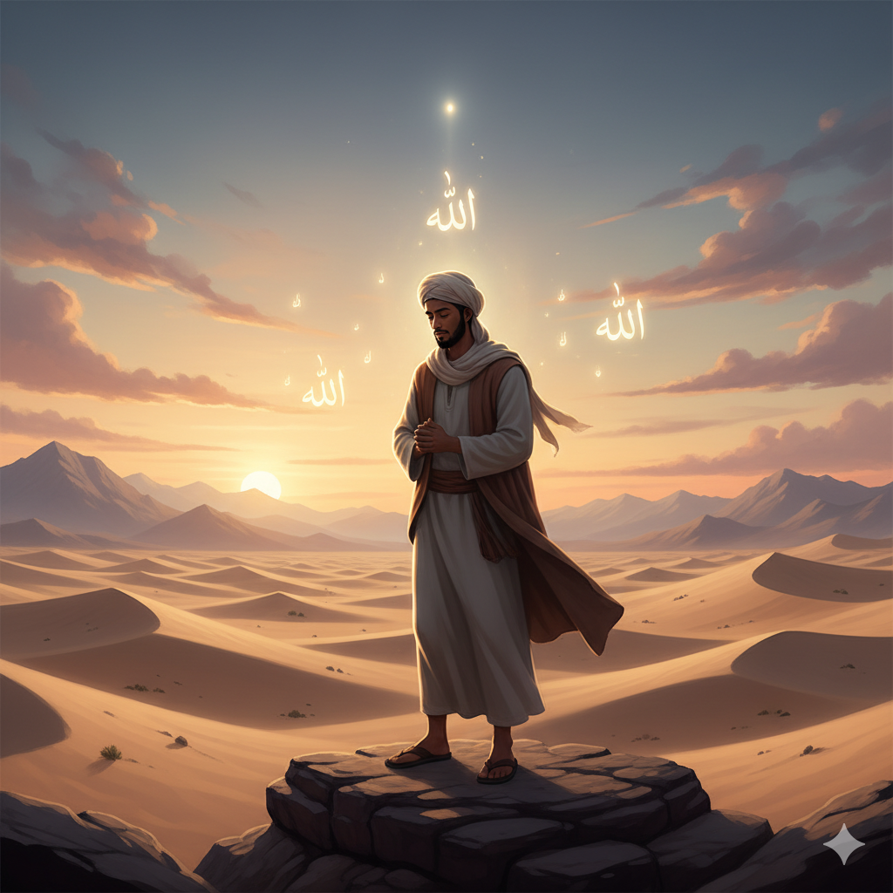
الفصل الثاني عشر: وأسلم الأسد والفاروق
كانت الدعوة تنتشر ببطء،
لكن هذا البطيء لم يكن ضعفًا.
كان بناءً عميقًا في الداخل.
ومع كل يوم،
كان أذى قريش يزداد.
وفي أحد الأيام،
عاد النبي ﷺ من المسجد الحرام،
فوجد أذى قد وُضع على ظهره وهو ساجد.
لم يدافع عنه أحد.
لم يتحرك قلب من حوله،
إلا قلب صغير:
فاطمة.
اقتربت فاطمة وهي تبكي،
وأزاحت الأذى عن ظهر أبيها.
كان المشهد صامتًا،
إلا من صوت بكائها.
وفي تلك اللحظة
سمع **حمزة بن عبدالمطلب**،
أسد قريش،
عن الإهانة التي تعرّض لها النبي ﷺ.
لم يفكر طويلًا،
لم يناقش،
لم يجلس ليستشير أحدًا.
ذهب إلى أبي جهل،
وضربه ضربًا شديدًا أمام الناس،
وقال بصوتٍ هزّ مكة:
"أَتَشْتِمُ مُحَمَّدًا وَأَنَا عَلَى دِينِهِ؟!"
كانت تلك الكلمة إعلانًا:
دخل حمزة الإسلام،
فدخل معه **القوة**.
ولم يعد المسلمون وحدهم بعد اليوم.
***
لكن الحدث الأكبر لم يكن هذا فقط.
كان هناك رجل آخر،
لا يشبه أحدًا في شدته وقوته.
اسمه **عمر بن الخطاب**.
كان عمر في ذلك الوقت
من أشد الناس على الدعوة.
ليس لأنه يكره الحق،
بل لأنه كان يرى أن ما يحدث
تهديد لما اعتاد عليه الناس.
وفي يوم من الأيام،
غضب غضبًا شديدًا،
فحمل سيفه
وقرر أن يقتل محمدًا ﷺ.
وفي الطريق،
قيل له:
"قبل أن تقتل محمدًا،
أختك وزوجها قد أسلما."
تغيّر الطريق.
لم يعد الجبل هو وجهته،
بل البيت.
دخل عمر على أخته،
فوجدها تقرأ القرآن.
غضب،
فضرب زوجها،
ثم ضربها حتى سال الدم.
لكنها قالت بصوت ثابت:
"نعم، أسلمنا.
فاصنع ما شئت."
توقف عمر.
نظر إلى الدم على خدها.
لم يقل شيئًا.
سقطت القوة كلها من كتفيه.
طلب الصحيفة.
قرأ:
﴿طه * ما أنزلنا عليك القرآن لتشقى﴾
كان القلب الذي كان حجرًا،
يلين ببطء.
قال:
"دلوني على محمد."
دخل عمر على النبي ﷺ،
وكان الصحابة خائفين منه.
فلو أراد القتل لأتمه.
لكن النبي ﷺ لم يتراجع خطوة.
اقترب منه وقال:
"أما آن لك يا عمر؟"
أغمض عمر عينيه،
وكأن كل الصراع الطويل داخله
كان ينتظر تلك اللحظة.
وقال:
"أشهد أن لا إله إلا الله،
وأشهد أن محمدًا رسول الله."
***
كان ذلك اليوم نقطة تحول.
لم تعد الدعوة خافتة.
لم يعد المؤمنون مختبئين.
بين قوة حمزة،
وحكمة عمر،
ومكانة أبي بكر،
صار للإيمان **هيبة**.
ومكة كلها بدأت ترى شيئًا جديدًا:
الإيمان الذي بدأ في الخفاء،
أصبح الآن يقف صريحًا
في قلب المدينة.
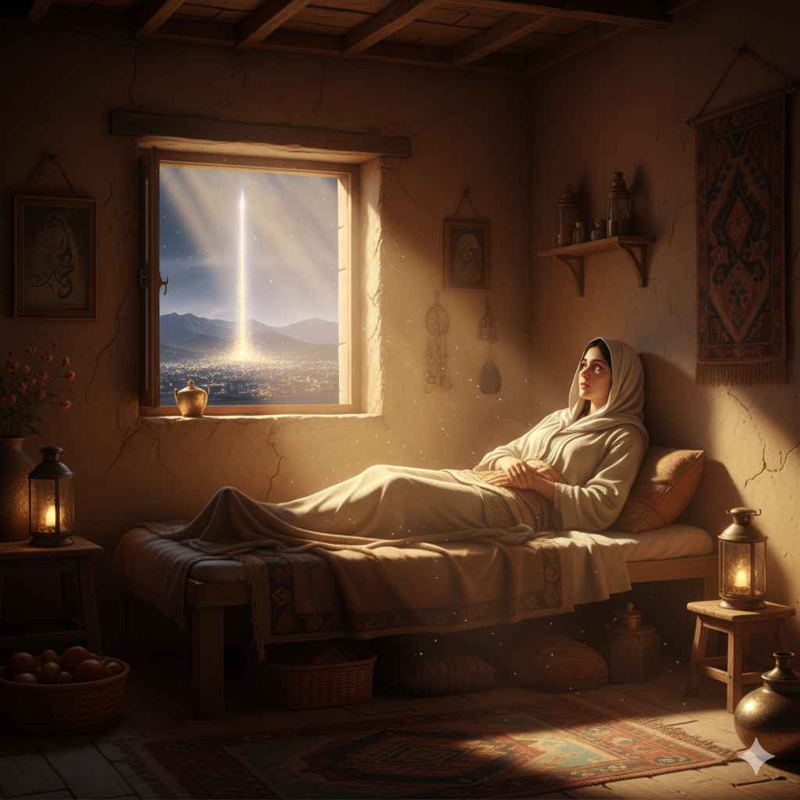
الفصل الثالث عشر: الحصار والعام الحزين
اشتدّت قريش على المسلمين، ولم تعد الكلمات تكفي.
قرّرت القبائل أن تخنق الدعوة من جذورها.
اجتمعوا في دار الندوة،
وكتبوا صحيفة تُعلِن:
لا زواج، لا طعام، لا بيع، ولا شراء
لكل من يناصر محمدًا ﷺ.
وقّعوها، وعلّقوها داخل الكعبة.
كأنهم يريدون أن يخنقوا رحمة السماء بالأوراق.
انتقل النبي ﷺ وأهله ومن آمن معه
إلى شعب أبي طالب.
وادت ضيقة، بين الجبال،
لا يسمع فيها إلا صوت الريح.
مرت الليالي طويلة.
الجوع كان يطرق الأبواب.
والأطفال كانوا يبكون حتى يناموا من التعب.
لم يكن معهم إلا الصبر.
والصبر إذا ثبت… يصبح سلاحًا.
ظنّت قريش أنها أغلقت الباب،
لكنها لم تعرف أن الله يفتح الأبواب من حيث لا يُرى.
وبعد ثلاث سنوات،
أكلت الأرضة الصحيفة،
ولم تبقَ إلا كلمة واحدة:
"باسمك اللهم".
كأن الله يقول:
"ما كُتب باسمي لا يُمحى".
انتهى الحصار،
لكن الامتحان لم ينتهِ.
في تلك الفترة،
مات أبو طالب…
السند الذي كان يحمي النبي ﷺ من الأذى.
وبعده بقليل…
ماتت خديجة رضي الله عنها…
القلب الذي كان يخفف عنه كل تعب.
انطفأت الأنوار حوله،
لكن نور قلبه لم ينطفئ.
سُمّي ذلك العام:
"عام الحزن".
لكن الحزن لم يكن نهاية الطريق.
كان بداية باب جديد.
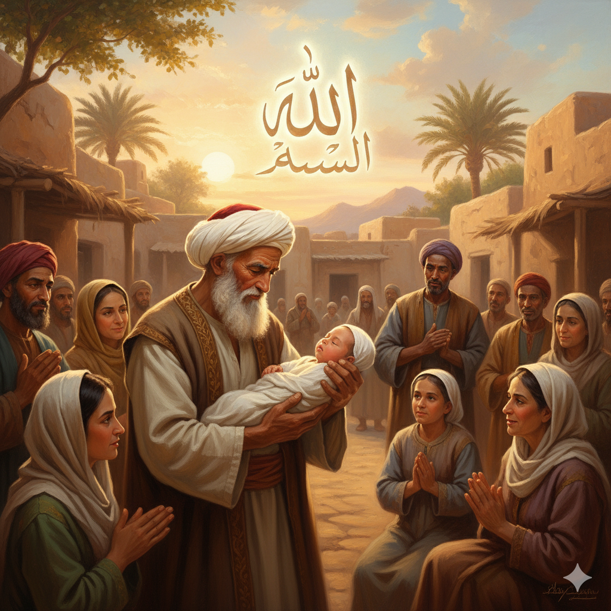
الفصل الرابع عشر: الطائف والإسراء والمعراج
بعد رحيل السند والرفيقة،
خرج النبي ﷺ يبحث عن قلوب تستقبل النور.
اتجه إلى الطائف.
لم يذهب يائسًا،
بل ذهب يحمل أملاً.
لكن أهل الطائف لم يستقبلوه بالترحيب.
بل أغروا الصبيان والسفهاء،
فرموه بالحجارة.
كان يمشي،
والدم يسيل من قدميه.
وكان زيد يحاول أن يحميه بجسده.
عند حائط صغير،
جلس النبي ﷺ.
رفع رأسه إلى السماء،
ولم يقل:
"يا رب لماذا؟"
بل قال بكلمات خالدة:
"إن لم يكن بك غضب عليّ فلا أبالي."
هذا هو الإيمان:
لا ينهزم حين يخسر،
بل ينهزم حين يظن أن الله تخلى عنه.
والنبي ﷺ كان يعلم أن الله لا يترك عباده.
وفي تلك الليلة،
كان التعويض أكبر من الألم.
أُسري بالنبي ﷺ من مكة إلى القدس.
ثم عُرج به إلى السماء.
ورأى من آيات ربه الكبرى.
ورأى الأنبياء،
وتجاوز السبع سماوات،
حتى وصل إلى سدرة المنتهى.
وهناك،
فرض الله الصلاة.
لم تكن الصلاة تكليفًا،
بل كانت هدية.
نافذة بين الأرض والسماء،
حتى لا تبقى القلوب وحدها.
وفي العودة،
عاد النبي ﷺ أقوى مما خرج.
فمن يقترب من الله…
لا يضعفه شيء.
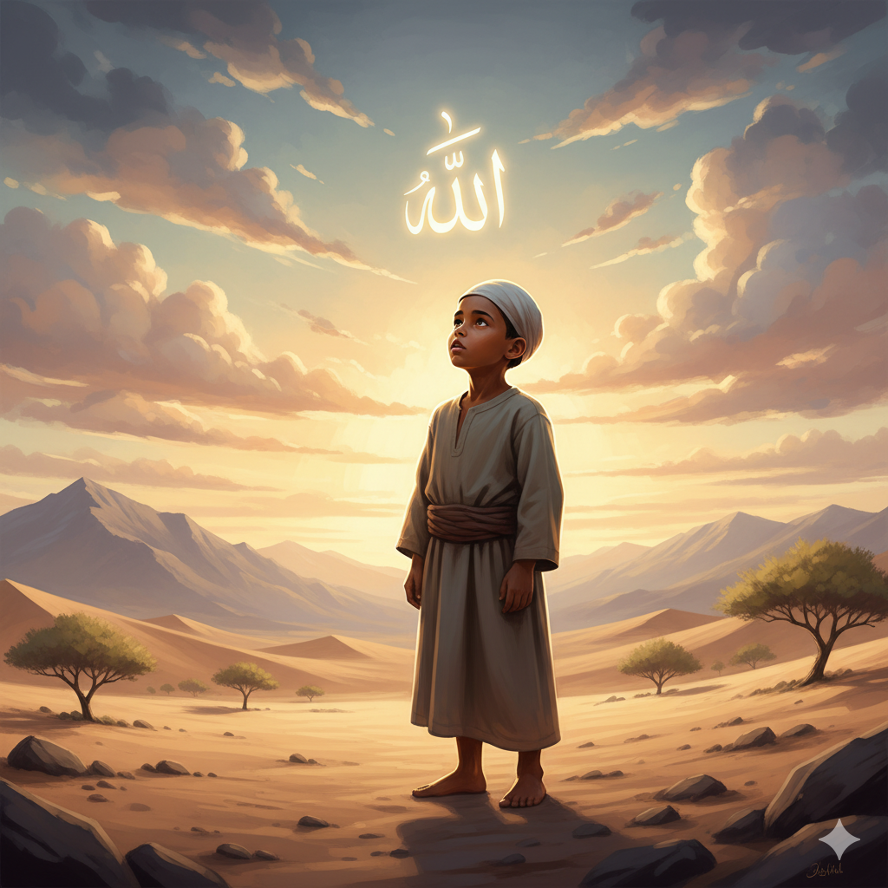
الفصل الخامس عشر: وصف النبي ﷺ
لم يكن جمال النبي ﷺ جمال مظهر فقط،
بل جمال حضور.
كان إذا دخل مكانًا، شعر الناس بالسكينة.
وإذا تحدث، دخل كلامه القلب بدون استئذان.
كان وجهه مضيئًا،
ليس نورًا يُرى،
بل نورًا يُشعر.
كان معتدل القامة،
ليس بالطويل ولا بالقصير.
وكانت لحيته تزين وجهه،
كأنها تحفّ بضياء.
وكانت عيناه واسعتين،
إذا نظر إليك،
شعرت أنه يعرف ما في قلبك،
وأنه لا يحكم عليك.
وكان ﷺ يضحك،
لكن ضحكه لم يكن صخبًا،
كان تبسّمًا يحمل رحمة.
وكان إذا غضب،
لم يغضب لنفسه،
بل للحق فقط.
وكان الناس إذا جالسوه،
لا يريدون أن يقوموا،
لأنهم يشعرون أنهم جالسوا السلام نفسه.
هذا ليس وصف جسد،
هذا وصف رجلٍ
كانت روحه رسالة.
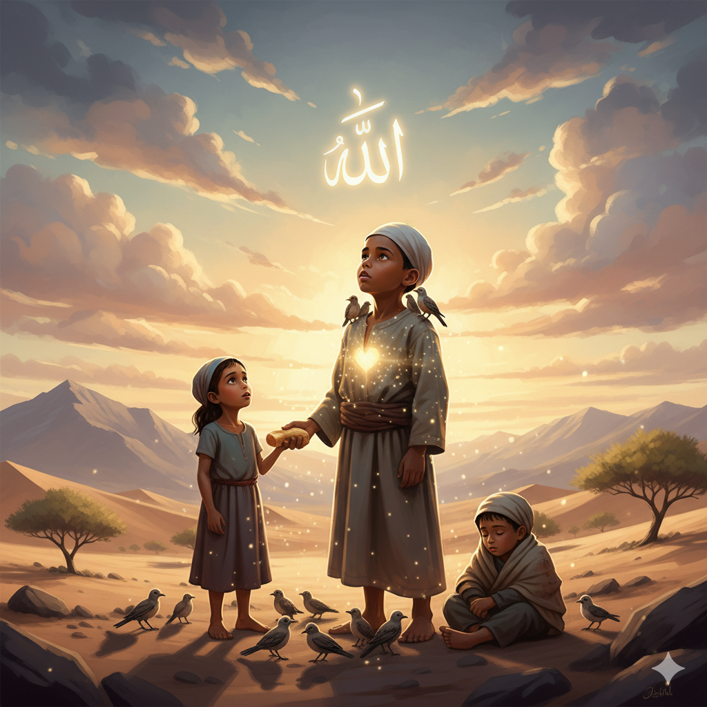
الفصل السادس عشر: بيعة العقبة الأولى
في موسم الحج،
جاء رجال من يثرب.
كانوا يبحثون عن الحق،
ولم يأتوا طلبًا لمصلحة.
جلسوا مع النبي ﷺ سرًا.
تحدث إليهم،
لا عن سلطان،
ولا مال،
بل عن الله.
قالوا:
"هذا والله هو الذي كنا نسمع عنه من أهل الكتاب."
مدوا أيديهم،
وبايعوه على الإيمان،
وعلى أن يحملوا الدعوة.
كانت تلك اللحظة بداية فصل جديد.
لم تكن بيعة عادية.
كانت بذرة دولة.
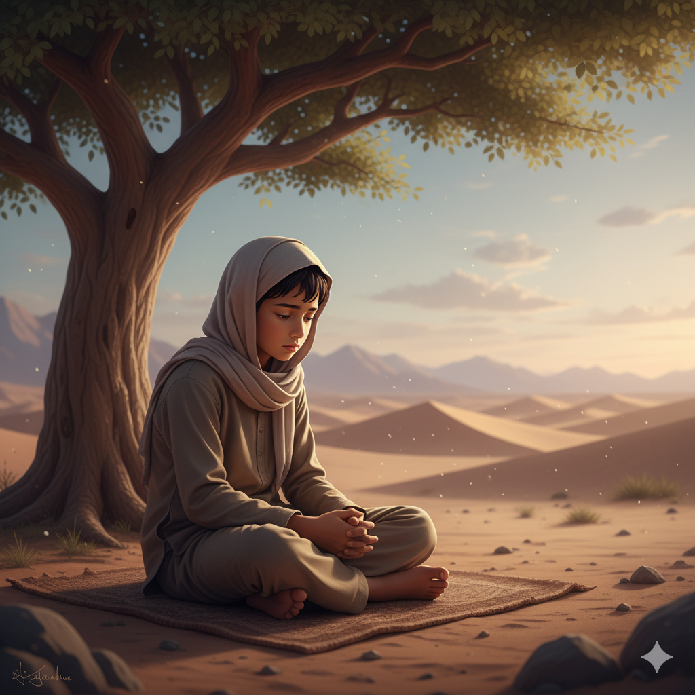
الفصل السابع عشر: بيعة العقبة الثانية
لم تكن بيعة العقبة الأولى سوى بداية الطريق.
الإيمان كان قد وجد قلبًا في يثرب،
لكن الطريق لتصبح وطنًا يحتاج قوة.
في العام التالي،
جاء وفد أكبر من أهل المدينة.
كانوا ثلاثة وسبعين رجلًا وامرأتين.
اجتمعوا سرًا مع النبي ﷺ في الليل،
في وادٍ بين الجبال،
لا يسمعهم إلا النجوم.
قال النبي ﷺ لهم:
"بايعوني على أن تمنعوني مما تمنعون منه نساءكم وأبناءكم."
لم يبايعوه على كلمة،
بل على **الحياة**.
فقالوا:
"إن قاتلت قاتلنا معك،
وإن سلمت سلمنا معك."
كانت تلك اللحظة أشبه بفتح باب.
باب من مكة إلى المدينة.
من الحصار إلى الانطلاق.
من الضعف إلى القوة.
وبعد البيعة،
عادوا إلى يثرب،
وهم يحملون نورًا،
سيحوّل المدينة كلها.
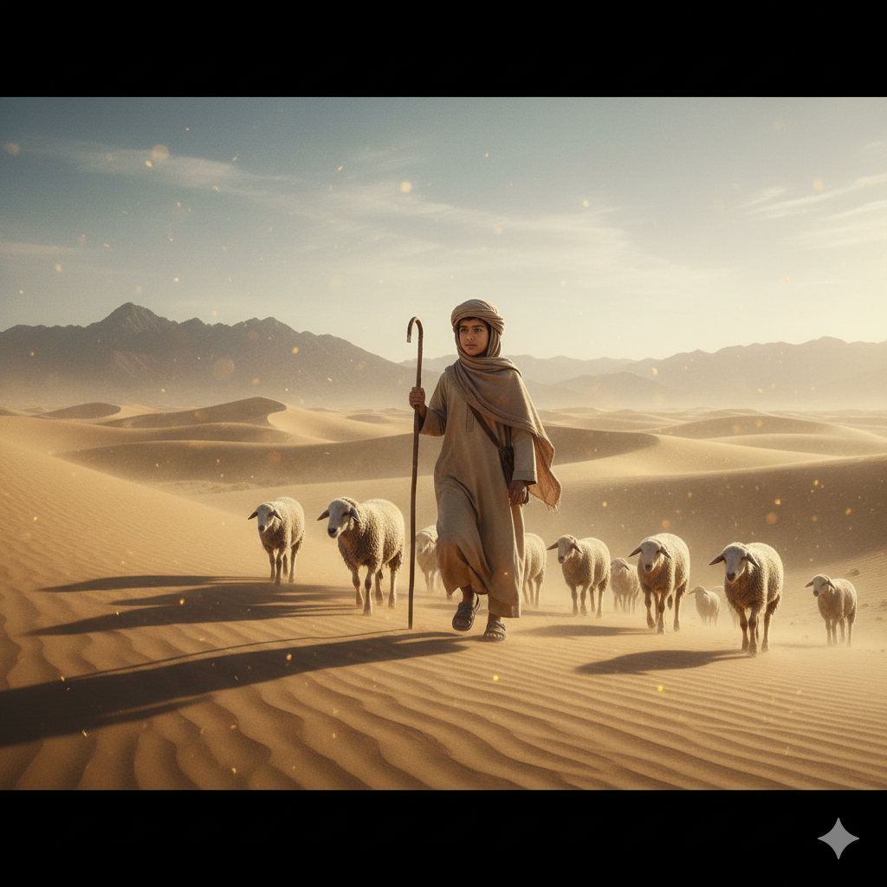
الفصل الثامن عشر: الهجرة والصحبة
بدأت قريش تشعر بالخطر.
الدعوة لم تعد محصورة في مكة.
والمدينة أصبحت أرضًا جديدة للإيمان.
قررت قريش أن تمنع الهجرة بأي ثمن.
فمنعوا الناس من الخروج،
وراقبوا الطرق،
وحاصروا البيوت.
لكن المؤمنين خرجوا واحدًا واحدًا،
ليلًا، فرادى،
كأنهم طيورٌ تطير نحو الفجر.
أما النبي ﷺ…
فبقي.
لم يغادر حتى أذن الله.
وفي ليلة من الليالي،
اجتمع أعداؤه أمام بيته،
ليقتلوه قبل طلوع الفجر.
لكن الله لا يترك رسوله.
خرج النبي ﷺ من بينهم،
وقرأ:
﴿ وجعلنا من بين أيديهم سدًّا ومن خلفهم سدًّا فأغشيناهم فهم لا يبصرون ﴾
ولم يره أحد.
ثم انطلق إلى الغار،
وفي الطريق قال لأبي بكر:
"ما ظنّك باثنين الله ثالثهما؟"
في الغار،
اقترب المطاردون.
لو نظر أحدهم تحت قدميه لوجدهم.
لكن السكينة كانت أقوى من الخوف.
فالحفظ من السماء.
وبعد أيام،
انطلق النبي ﷺ إلى المدينة.
وكانت الأرض كلها تنتظره.
الفصل التاسع عشر: بناء الحضارة في المدينة
دخل النبي ﷺ المدينة…
فلم تكن مدينة كاملة.
كانت قلوبًا تحتاج إصلاحًا،
وجماعات تحتاج توحيدًا،
وحياة تحتاج معنى.
أول ما فعله النبي ﷺ هو **بناء المسجد**.
لم يكن المسجد جدرانًا وحجارة،
بل كان قلب الأمة.
مكانًا يجتمع فيه الناس
ليتذكروا من هم… ولماذا يعيشون.
ثم آخى النبي ﷺ بين المهاجرين والأنصار.
لم تكن مؤاخاة كلامًا،
بل حياة.
كان الرجل يقاسم أخاه بيته وماله ونَفَسَه.
ثم وضع النبي ﷺ **الوثيقة**:
أول دستور مدني في التاريخ.
يضمن الحقوق،
ويمنع الظلم،
ويجعل الناس أمّة واحدة،
تجمعهم الرحمة،
لا القبيلة.
وهكذا،
لم تبنَ الدولة بالسيف،
بل **بالعلم، والأخوة، والعدل**.
كانت المدينة أول مرة في التاريخ
يعيش الناس فيها ليُحبّوا الله…
لا ليخافوا من السلاسل.
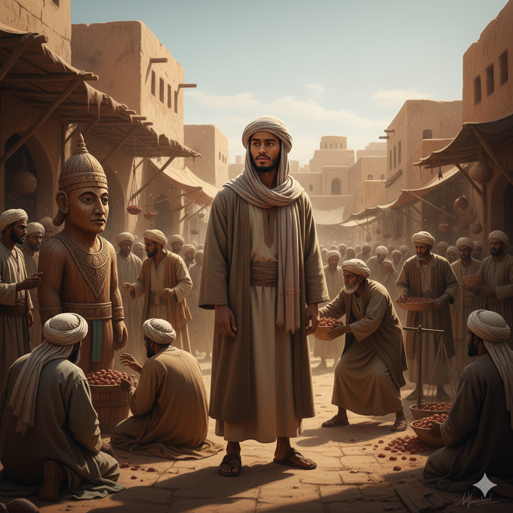
الفصل العشرون: بداية الغزوات
لم يكن الإسلام يريد الحرب.
لكن قريش لم تتوقف عن مطاردة المؤمنين.
تمنعهم من العبادة،
وتقطع عليهم الطريق،
وتأخذ أموالهم ظلمًا.
والظلم إذا تركته… يكبر.
فأذن الله للمسلمين
أن يدافعوا عن أنفسهم.
لم تكن الغزوات لإجبار أحد على الإيمان،
فالقلوب لا تُفتح بالقوة،
بل بالنور.
كانت الغزوات دفاعًا عن:
الإنسان،
والكرامة،
والحرية.
وكان النبي ﷺ يعلم أصحابه:
"لا تقتلوا طفلًا،
ولا امرأة،
ولا شيخًا،
ولا تقطعوا شجرًا،
ولا تهدموا بيتًا."
كان يقاتل الشر…
لا البشر.
وبدأت المرحلة التي سوف تغيّر وجه الجزيرة كلها.
 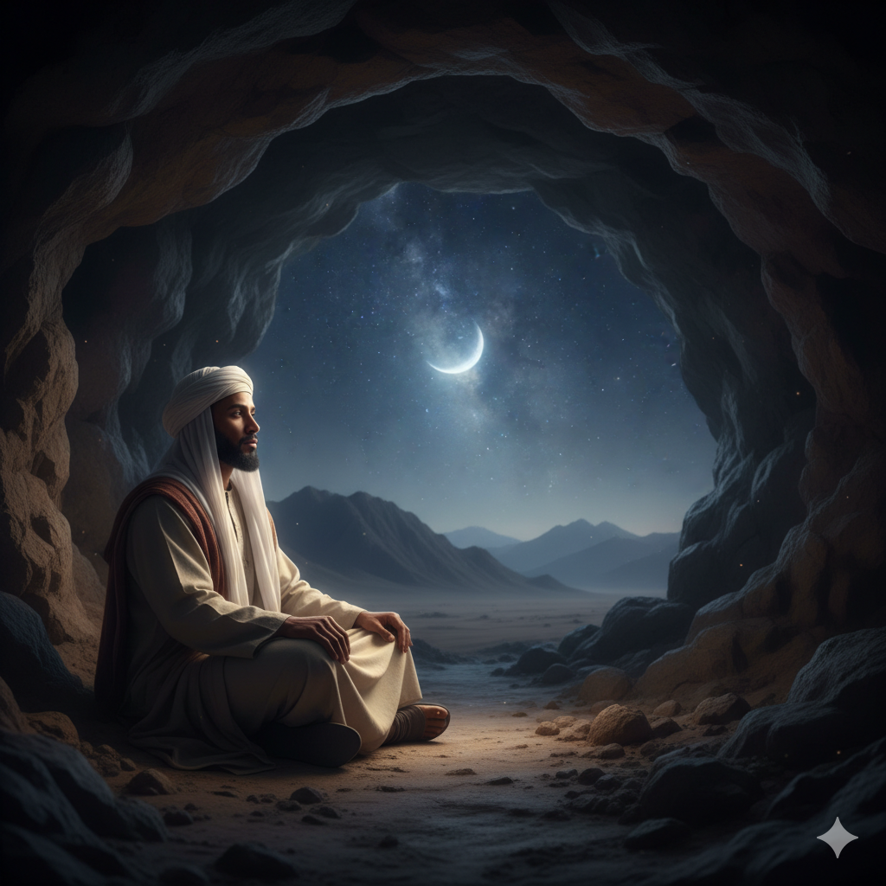
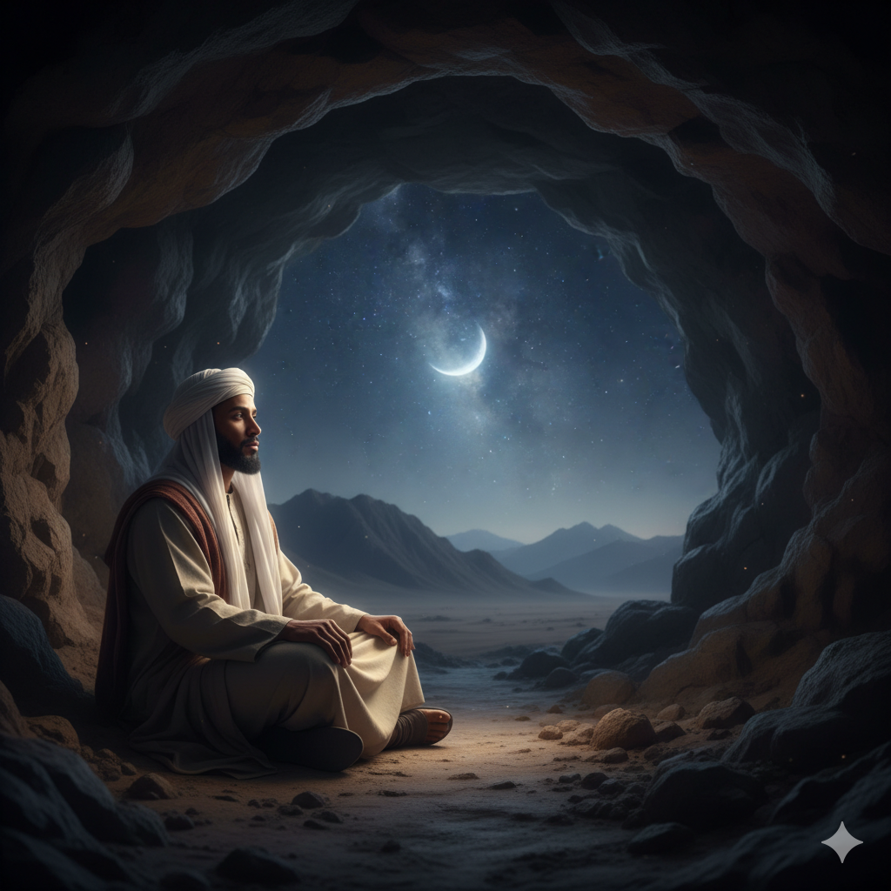
 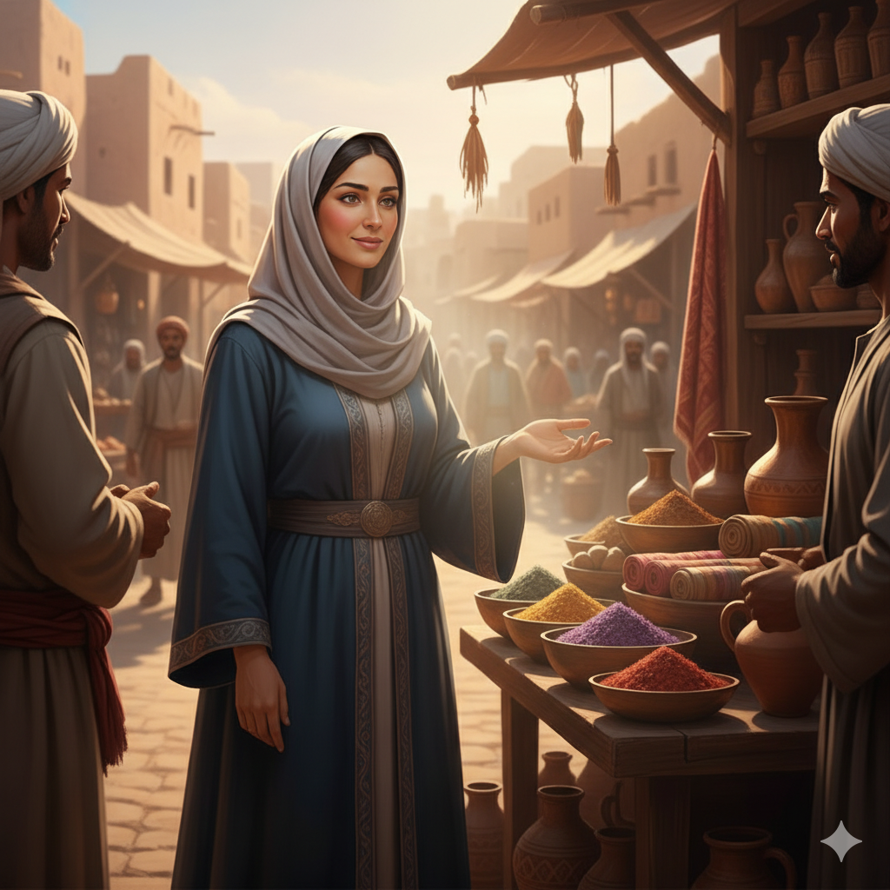
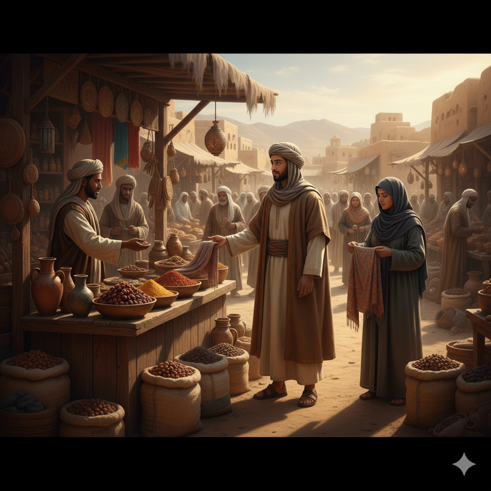
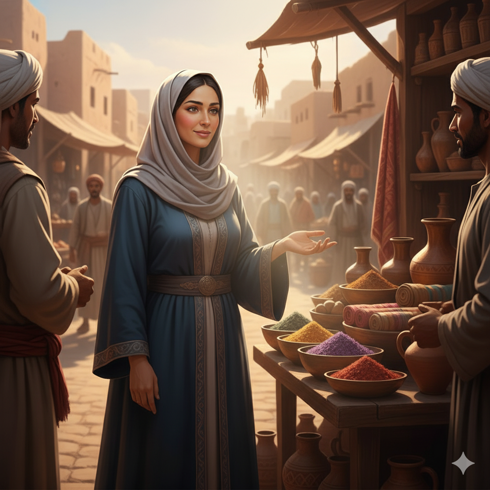
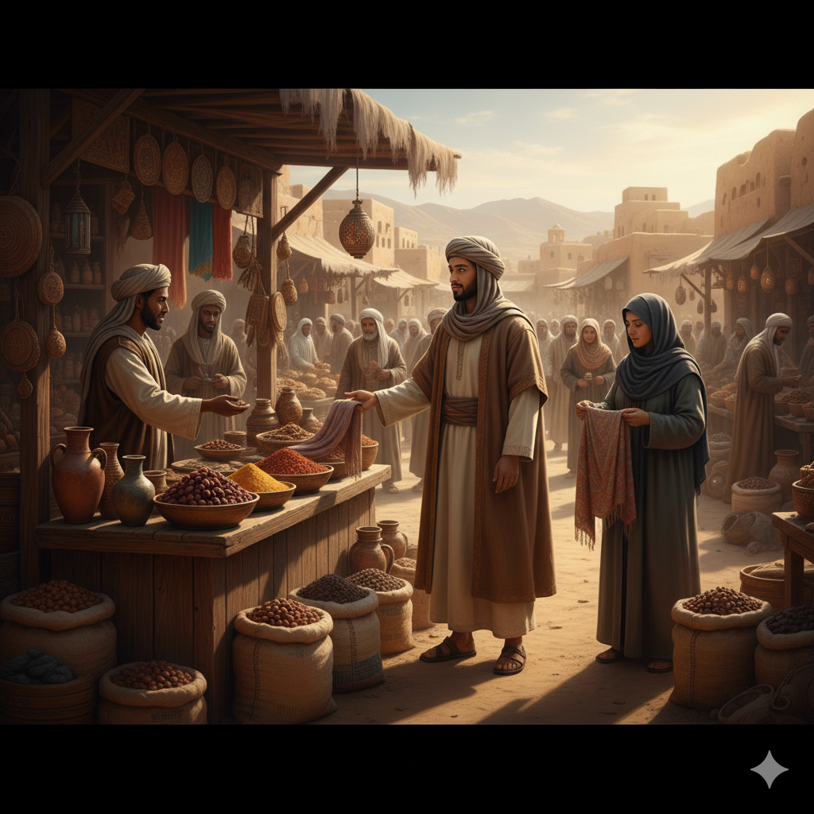
الفصل الحادي والعشرون: غزوة بدر
لم تكن بدر معركة جيشين متكافئين،
بل كانت مواجهة بين الخوف واليقين.
خرج المسلمون لا يريدون قتالًا،
خرجوا فقط لمحاولة استرداد ما سُرق منهم،
لكن قريش جاءت بكل قوتها
لتجعل من اليوم نهاية الدعوة.
كان عدد المسلمين ثلاثمائة وبضعة عشر فقط،
ومعهم فرسان اثنان،
أما قريش فكانت ألفًا،
مدجّجين بالسلاح.
لكن النصر لا يُقاس بالأرقام.
وقف النبي ﷺ ليلة بدر يدعو:
"اللهم إن تهلك هذه العصابة،
فلن تُعبد في الأرض."
لم يكن يدعو لنفسه،
بل للعالم كله.
وفي الصباح،
بدأت المعركة،
فلم تكن أصوات السيوف هي الأعلى،
بل أصوات القلوب التي تقول:
"حسبنا الله."
ونزل النصر من السماء،
لم ينزل لأن الجيش قوي،
بل لأن النفوس صادقة.
وانتهت بدر بإعلان:
أن الإيمان حين يثبت،
تسقط الجبال
ولا يسقط صاحبه.
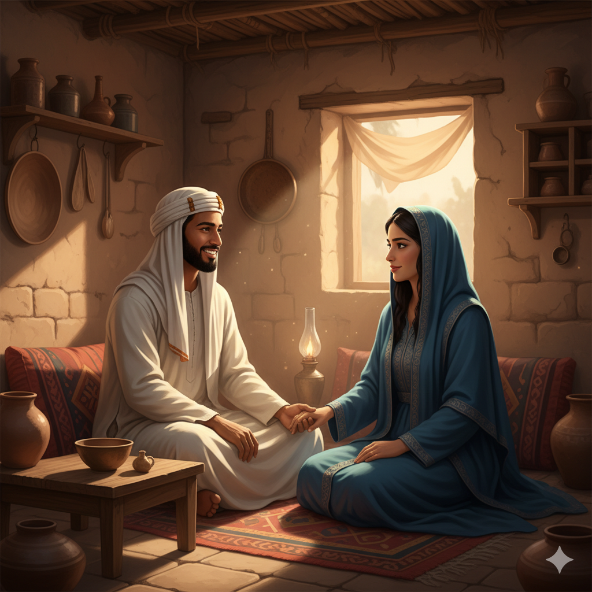
الفصل الثاني والعشرون: غزوة أحد
بعد بدر، ظنت قريش أن الهزيمة لن تتكرر.
فجمعت قوتها كلها،
وتحركت نحو المدينة.
وقف النبي ﷺ ينظم الصفوف،
وجعل على جبل الرماة خمسين رجلًا،
وقال لهم:
"لا تتركوا أماكنكم مهما حدث."
وعندما بدأت المعركة،
انتصر المسلمون في بدايتها،
حتى بدأ الرماة ينزلون من الجبل
ظنًا أن النصر اكتمل.
فالتاريخ أحيانًا يصنعه خطأ واحد.
استغل خالد بن الوليد الثغرة،
وتحول ميزان المعركة.
وجُرح النبي ﷺ،
سقط دمه على الأرض،
وكأن السماء نفسها صمتت.
لكن النبي ﷺ قال:
"ليس الأمر يومًا لبدر ويومًا لأُحد،
ولكن الأيام دُول."
أُحد لم تكن هزيمة،
كانت **درسًا**:
أن النصر لا يأتي بالعاطفة،
بل بالطاعة.
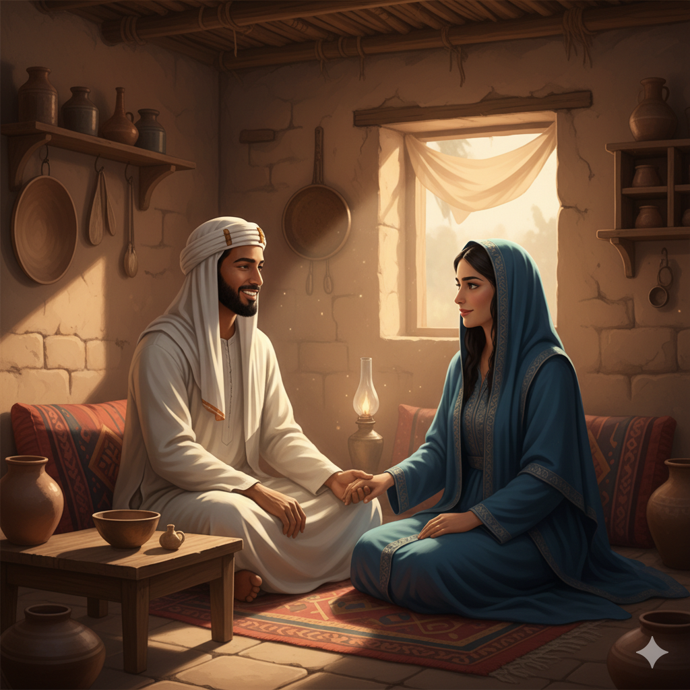
الفصل الثالث والعشرون: حصار بني قينقاع
لم تكن المدينة تعيش وحدها،
كان فيها قبائل من اليهود،
عاهدهم النبي ﷺ أن يعيشوا بسلام،
لا خيانة ولا ظلم.
لكنهم خانوا العهد،
وبدأوا يستهزئون بالإسلام علنًا،
حتى جاء اليوم الذي اعتدوا فيه على امرأة مسلمة في السوق،
وكشفوا سترها.
الكرامة عند المسلم ليست تفصيلًا،
هي أصل.
اشتعلت المدينة غضبًا،
وتدخل النبي ﷺ،
وطالب بني قينقاع بالوفاء بالعهد،
لكنهم اختاروا الكبر.
فحاصرهم المسلمون أيامًا،
حتى استسلموا،
ورحلوا عن المدينة.
لم يكن الهدف الانتقام،
بل حماية المدينة من الخيانة.
لأن الأمة لا تقوم إذا كان ظهرها مكشوفًا.
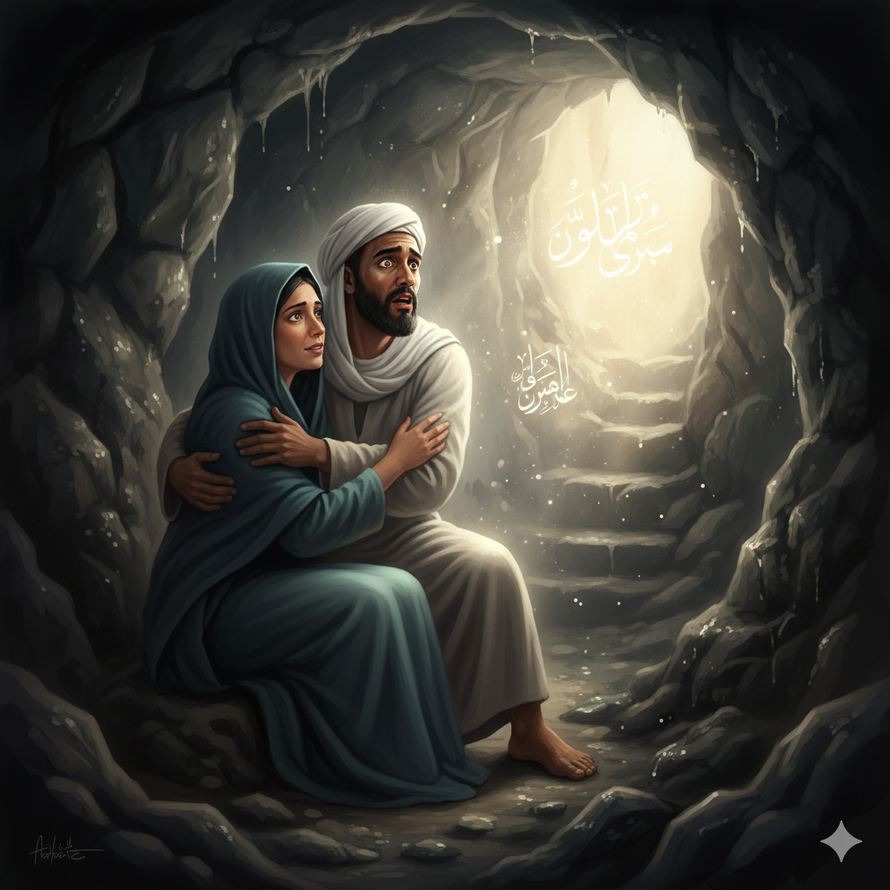
الفصل الرابع والعشرون: غزوة الأحزاب
تحركت قريش ومعها قبائل كثيرة،
عشرة آلاف مقاتل،
والمدينة قليلة العدد،
صغيرة الجدران.
كانت معركة وجود.
فجاءت فكرة لم يعرفها العرب من قبل:
الخندق.
أشار بها سلمان الفارسي،
فجلس النبي ﷺ مع أصحابه يحفرون بأيديهم،
والبرد شديد،
والجوع يضغط.
لكن القلوب كانت حيّة.
عندما أصبح الجيش على أبواب المدينة،
لم يجد طريقًا للدخول.
فوقفت قريش في البرد،
تنتظر فرصة لا تأتي.
ثم دبّ الخلاف بينهم،
والخوف،
ووُلد اليأس.
فأرسل الله ريحًا شديدة،
اقتلعت الخيام،
وأطفأت النيران،
وقلبت المعركة بلا سيف.
قال تعالى:
﴿ وكفى الله المؤمنين القتال ﴾
الأحزاب كانت إعلانًا:
أن القوة ليست دائمًا في اليد،
أحيانًا تكون في الصبر،
وفي الثبات،
وفي الثقة.
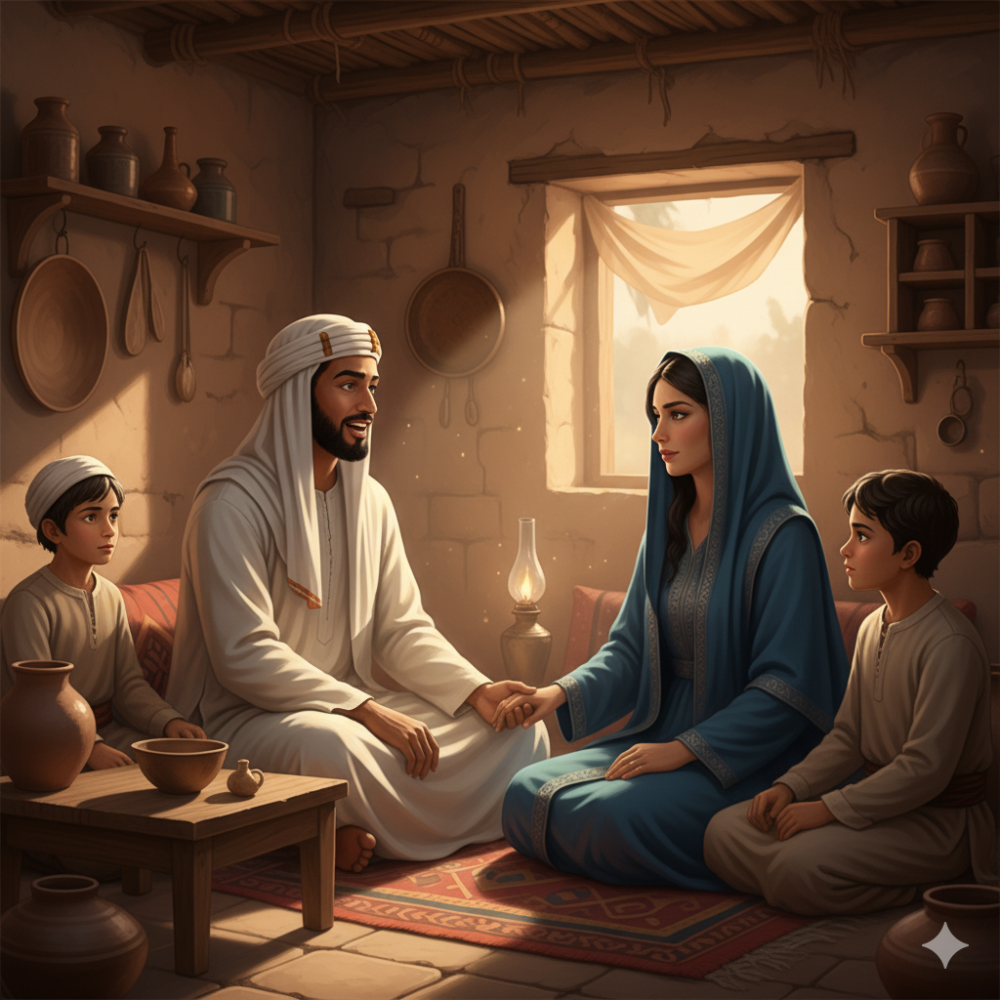
الفصل الخامس والعشرون: صلح الحديبية
خرج النبي ﷺ ومعه أصحابه يريدون العمرة،
لا يريدون قتالًا،
ولا مواجهة،
فقد اشتاقوا إلى البيت.
وكانوا unarmed، لا يحملون إلا قلوبًا عامرة.
لكن قريش ظنت أن قدومهم خدعة،
فمنعتهم من الدخول.
وفي الحديبية،
عند أطراف مكة،
وقف المسلمون محاصرين بين الشوق للبيت،
ومنع قريش.
وفي هذا الموقف نزل السلام.
جاءت المفاوضات،
وكان بعض بنود الصلح صعبة على قلوب الصحابة.
بعضهم شعر أن التنازل كثير،
وأن الكرامة تهتز.
لكن النبي ﷺ كان يرى أبعد منهم.
يرى الطريق الطويل،
يرى المستقبل،
يرى أن السيف لا يبني قلوبًا،
وأن الصبر قد يفتح أبوابًا لا يفتحها القتال.
وقّع الصلح،
وعاد إلى المدينة دون عمرة.
بعضهم كان قلبه موجوعًا.
لكن بعد سنوات قليلة،
ظهر أن صلح الحديبية لم يكن تنازلاً،
بل **فتحًا**.
ففي فترة السلام،
انتشر الإسلام أكثر مما انتشر في كل سنوات الصراع.
لأن الدعوة حين تُسمع بلا خوف،
تدخل القلوب بلا مقاومة.
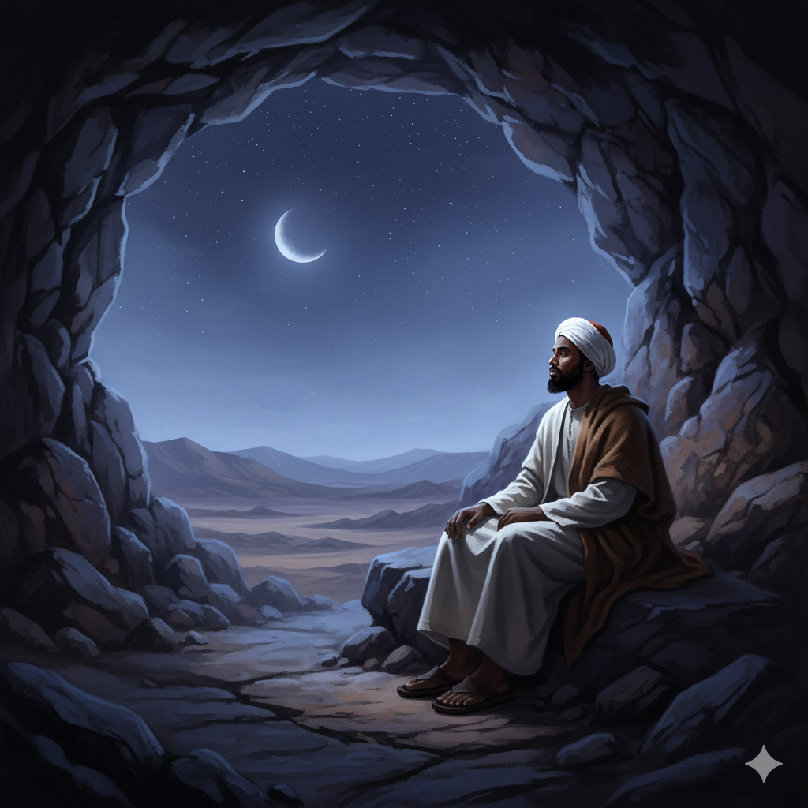
الفصل السادس والعشرون: خيبر
كانت خيبر حصونًا قوية،
أسوارها عالية،
وسكانها يملكون المال والسلاح،
ويحيكون المؤامرات ضد المدينة.
لم يكن القتال حبًا في القوة،
بل دفاعًا عن وجود الأمة.
تقدم المسلمون.
وكان اللواء يومها مع عليّ بن أبي طالب.
كان علي قد اشتكى من ألم في عينه،
فمسح النبي ﷺ عليها،
فشُفي كأن لم يمسه وجع.
وتقدم علي نحو الحصن،
وكانت خلفه أمة كاملة تنتظر.
لم تكن المعركة طويلة كما ظن الناس.
فإذا كانت القلوب ثابتة،
فالجدران مهما ارتفعت… تسقط.
وانفتح الحصن.
وسقطت أكبر قوة كانت تهدد المدينة من الداخل.
خيبر لم تكن مجرد انتصار،
كانت إعلانًا أن الإيمان لا يخاف من القلاع،
ولا من العتاد،
إذا كان الله معه.
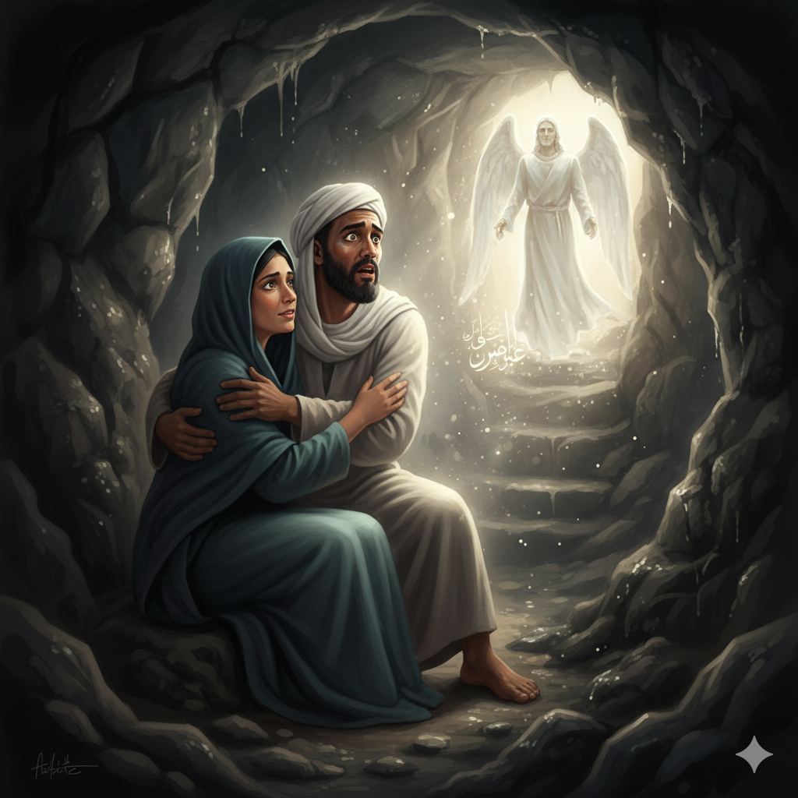
الفصل السابع والعشرون: فتح مكة
جاء اليوم الذي انتظره التاريخ.
قريش،
التي آذت،
والتي طردت،
والتي حاربت،
صارت الآن في مواجهة الحقيقة.
دخل النبي ﷺ مكة في عشرة آلاف مقاتل.
لكن المدينة لم تسمع صوت سيف،
لم تر دمًا،
لم يُرفع رأس أحد على رمح.
دخل النبي ﷺ برأسٍ خاشعة،
لا رأس المنتصر.
فالنصر ليس ليتكبر به الإنسان،
بل ليشكر.
وقف أمام الكعبة،
وقال:
"من دخل بيته فهو آمن.
ومن دخل المسجد فهو آمن.
ومن دخل بيت أبي سفيان فهو آمن."
لم ينتقم.
لم يحاسب.
لم يعاقب.
بل قال:
"اذهبوا… فأنتم الطلقاء."
الفتح لم يكن فتح مدينة،
بل **فتح قلوب**.
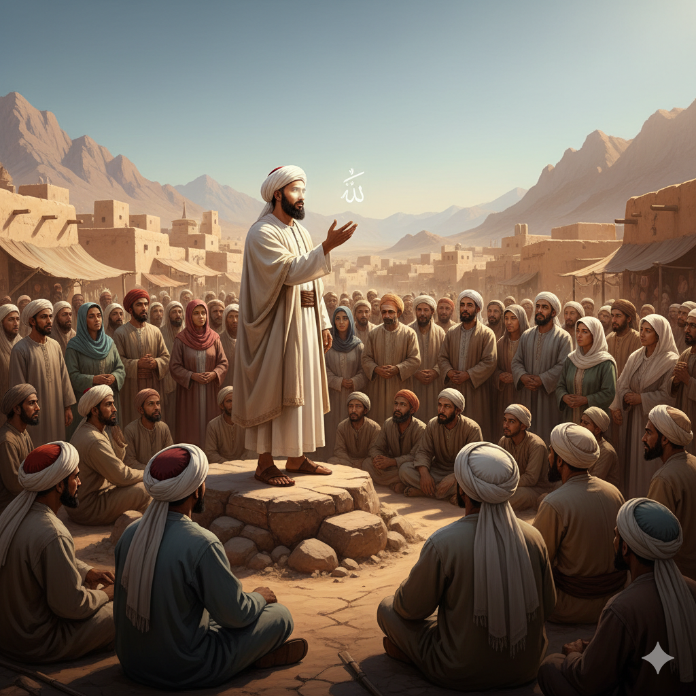
الفصل الثامن والعشرون: حنين والطائف
بعد فتح مكة،
ظن بعض المسلمين أن النصر صار مضمونًا،
وأن القوة تكفي وحدها.
وفي حنين،
خرجوا بعدد كبير،
حتى قال بعضهم:
"لن نُهزم اليوم من قلة."
فكانت الهزيمة في البداية،
حتى ضاقت الأرض بما رحبت.
وهنا،
وقف النبي ﷺ ثابتًا،
ينادي:
"أنا النبي لا كذب،
أنا ابن عبد المطلب."
فالتف الجيش حوله من جديد،
وتحوّل الهزيمة إلى نصر.
أما الطائف،
فكانت حصونًا منيعة،
وأهلها قوم قاسون،
رموا المسلمين بالسهام والحجارة.
لم تُفتح الطائف بالسيف،
بل فتحها الإسلام بعد سنوات،
حين دخلت القلوب قبل المدن.
لأن الأبواب تُفتح بالقوة،
أما النفوس فلا تُفتح إلا باللطف.
الفصل التاسع والعشرون: غزوة تبوك
كانت تلك الغزوة مختلفة.
لم يكن العدو قريبًا،
ولا القتال مؤكدًا.
كانت المسافة طويلة،
والحر شديد،
والثمار قد نضجت على الأشجار.
كان الاختبار هذه المرة
ليس في السيف،
بل في النوايا.
"هل أنت مع الحق حين يكون الطريق سهلاً فقط؟
أم معه حين يطلب التضحية؟"
تردد البعض،
واعتذر آخرون،
واختبأ المنافقون خلف الكلام.
أما الصادقون،
فخرجوا ليس لأنهم أقوياء،
بل لأن قلوبهم لا تستطيع أن تبقى حين يدعوهم الله.
حتى الذين لم يجدوا ما يركبون عليه،
خرجوا بالبكاء،
وقالوا:
"لا نجد ما نحملكم عليه."
فنزل فيهم القرآن:
﴿ وَلَا عَلَى الَّذِينَ إِذَا مَا أَتَوْكَ لِتَحْمِلَهُمْ ﴾
كانت تبوك درسًا:
أن الجنة لا تُنال بالراحة.
وأن الله لا ينظر إلى قوة الجسد،
بل إلى صدق القلب.
الفصل الثلاثون: عام الوفود
بعد سنوات القتال والصبر،
بدأت القبائل تأتي إلى المدينة.
قبائل من الشرق،
قبائل من الغرب،
ملوك،
عظماء،
وفود من كل مكان.
لم يأتوا سائلين عن السلاح،
ولا عن القوة،
بل عن كلمة واحدة:
"ما هذا الدين الذي جعل من قومٍ ضعفاء
أمةً لا تُهزم؟"
كان النبي ﷺ يستقبلهم بوجهٍ يضيء،
لا يعاملهم كمن انهزم،
ولا كمن انتصر،
بل كمن يدعو إلى نور.
لم يكن الإسلام ينتشر بالسيف،
بل بالمحبة،
بالحكمة،
بالقدوة.
وصار من كان يحارب الأمس،
يأتي اليوم ليضع يده في يد النبي،
ويقول:
"أشهد أن لا إله إلا الله."
وهكذا،
انتقل الإسلام من دعوة في بيت صغير،
إلى رسالة للعالم.
الفصل الحادي والثلاثون: حجة الوداع
وقف النبي ﷺ على جبل عرفة،
ورفع صوته يخاطب الناس.
لم يكن خطابًا عاديًا،
كان **وصية أمة**.
تحدث عن الدماء،
عن الحقوق،
عن النساء،
عن الأمانة،
عن الأخوة.
وقال:
"لا ترجعوا بعدي كفارًا يضرب بعضكم رقاب بعض."
ثم نزل الوحي،
وجاءت الآية التي أسمعت التاريخ كله:
﴿ اليوم أكملت لكم دينكم وأتممت عليكم نعمتي ورضيت لكم الإسلام دينًا ﴾
بكى عمر حين سمعها.
لأنه فهم.
إذا اكتمل البناء،
فقد جاء وقت الوداع.
الفصل الثاني والثلاثون: الرحيل
بدأ المرض يشتد.
وكان النبي ﷺ لا يشكو،
لكن التعب كان واضحًا.
في الأيام الأخيرة،
خرج إلى المسجد،
والناس خلفه يصلون.
ثم التفت إليهم،
وابتسم.
وكأن تلك الابتسامة
كانت آخر هدية منه للأمة:
طمأنينة،
ورحمة،
وأمان.
عاد إلى بيت عائشة،
ووضع رأسه على صدرها.
وكان آخر ما قاله:
"بل الرفيق الأعلى."
لم يكن الموت نهاية.
بل بداية أخرى:
بداية أمة كُلِّفت أن تكمل الطريق.
لم يمت النور.
لأنه لم يكن يسكن جسدًا،
بل قلوبًا.
والقلوب إذا حملت النور،
لا تنطفئ.
الفصل الأول: البداية الإبراهيمية
قبل أن يولد النبي ﷺ بقرونٍ طويلة، كانت الأرض تستعد لظهور الرسالة، دون أن يدري أهلها. وكانت البداية ليست من مكة، بل من قلب رجلٍ واحد: إبراهيم عليه السلام. رجلٌ وقف وحده في وجه عالمٍ كامل. عاش بين قومٍ يعبدون ما يصنعون بأيديهم، لكن قلبه لم يستطع أن يسجد إلا لله وحده. كان يبحث عن الحقيقة لا لأن أحدًا طلب منه، بل لأنه شعر أن الروح لا تهدأ إلا حين تعرف ربها. هاجر إبراهيم من قومه، من بيته، من كل ما يملك، لكنّه لم يهاجر من أجل هروب، بل هاجر من أجل لقاء. لقاء مع أمر الله. وهناك… في وادٍ قاحلٍ لا نبات فيه ولا ماء، أخذ إبراهيم زوجته هاجر وطفلها إسماعيل، ووضعهما عند بيتٍ لم يُبنَ بعد، ولا أحد يسكن حوله. ثم استدار وتركهما، دون أن يشرح شيئًا. نادته هاجر: – يا إبراهيم! أالله أمرك بهذا؟ فقال بثبات: – نعم. فقالت: – إذن لن يضيعنا. لم تكن تلك جملةً عادية، كانت **مدرسة إيمان كاملة**. الإيمان ليس كلامًا… بل ثقة. ولم تكن تعرف أن الله سيجعل من خطواتها نورًا، ومن سعيها في الوادي تاريخًا، ومن صبرها معجزة اسمها زمزم. مرت الأيام، وكبر إسماعيل، وجاء إبراهيم يرى ابنه بعد طول غياب. وفي إحدى الليالي… رأى في المنام أنه يذبحه. وكأن الله يقول له: "هل تحبني يا إبراهيم؟" فقال بعمله قبل لسانه: "نعم، أكثر من كل شيء." لم يكن الاختبار لإسماعيل، بل لقلب أبيه. ومن يسلّم قلبه… لا يُكسره الله أبدًا. ولما اكتمل التسليم، رفع إبراهيم السكين، لكن الله لا يريد دمًا، الله يريد **قلبًا صادقًا**. فقال سبحانه: ﴿ وَفَدَيْنَاهُ بِذِبْحٍ عَظِيمٍ ﴾ لم يكن الفداء مجرد كبش… كان إعلانًا: أن الدين هذا **دين الرحمة**، لا دين الدم. ومع مرور الزمن، عاد إبراهيم وإسماعيل يبنيان بيتًا لله، بيتًا سيقف عنده البشر من كل مكان، يبكون، يدعون، يسجدون. رفع إبراهيم القواعد، وإسماعيل يناوله الحجارة، والاثنان يقولان: ﴿ رَبَّنَا تَقَبَّلْ مِنَّا ﴾ وفي تلك اللحظة، رفع إبراهيم رأسه وقال الدعاء الذي لم تُجب آثاره إلا بعد آلاف السنين: > ﴿ رَبَّنَا وَابْعَثْ فِيهِمْ رَسُولًا مِنْهُمْ ﴾ لم يكن يعرف اسمه، ولا زمنه، ولا شكله، لكنه كان يعرف أنه سيكون: **رحمةً للعالمين**. وبعد قرونٍ طويلة… سيولد ذلك الرسول في مكة، من نسل إسماعيل، استجابة لدعاء قاله إبراهيم بقلبٍ مطمئن، أنه لا شيء يضيع عند الله. وهكذا، لم تبدأ السيرة من ميلاد محمد ﷺ، بل بدأت من **قلبٍ صدق الله**، فصنع الله به تاريخًا جديدًا.
الفصل الثاني: شجرة النسب النبوي
لم يكن اختيارُ النبي ﷺ صدفة، ولا كان مولده حدثًا عابرًا في التاريخ. كان كل شيء مرتبًا منذ البداية، منذ أن رفع إبراهيم وإسماعيل القواعد الأولى للبيت. حين دعا إبراهيم عليه السلام: ﴿ رَبَّنَا وَابْعَثْ فِيهِمْ رَسُولًا مِنْهُمْ ﴾ لم يكن يدعو لنفسه، ولا لزمنه، بل كان يدعو لأمةٍ ستأتي بعده بقرونٍ طويلة. ومن نسل إسماعيل عليه السلام، بدأت شجرة طويلة تنمو، شجرة لا تُعرف بالقوة أو الثروة أو الحكم، بل بالصدق، والأمانة، والنقاء. في مكة، وُلدت قبيلة لها شأن عظيم: **قريش**. لم تكن أقوى القبائل، لكنها كانت الأكثر احترامًا، لأنها كانت تجمع الناس حول البيت، وتخدم الحجاج، وتحافظ على تقاليد الكرم والوفاء. ومن بين بطون قريش كان **بنو هاشم**. بيتٌ كان يُعرف بأن بابه لا يُغلق، وأن جائعًا لا يخرج منه دون أن يشبع. كانوا لا يملكون الذهب، لكنهم كانوا يملكون **القلب**. وجاء عبد المطلب، الرجل الذي أعاد زمزم للحياة، ونصره الله حين حاول أبرهة هدم الكعبة، ليُفهم الناس أن هذا البيت ليس ملكًا لأحد، بل لله وحده. وفي يومٍ من الأيام، ولد لعبد الله بن عبد المطلب ولدٌ، ولدٌ لم ير أباه، لكن نور أبيه كان فيه. سماه جدّه: **محمد**. اسم لم يكن مألوفًا في العرب، كأن القدر يهيئ الناس ليسمعوا هذا الاسم كثيرًا فيما بعد، حتى يملأ الدنيا. لكن قبل أن يُولد محمد ﷺ، كانت هناك حكمة عظيمة في اختيار هذا النسب: الله اختار نسبًا: - لا يعبد الأصنام بصدق، - ولا يظلم ضعيفًا، - ولا يخون عهدًا. اختار بيتًا لا يعرف الخيانة، ليولد فيه من سيحمل أمانة السماء. اختار بيت رحمة، ليأتي منه: **رحمة للعالمين**. وهكذا، لم يكن نسب النبي شرفًا اجتماعيًا، بل كان **تهيئة إلهية**، تربية ربانية، تاريخًا كاملًا يتحرك ليصل إلى لحظة واحدة: لحظة يولد فيها نورٌ سيغيّر وجه الأرض. فكما لم تكن الرسالة صدفة، لم يكن صاحبها صدفة. لقد اختاره الله… قبل أن يعرفه الناس.
الفصل الثالث: لماذا احتاج العالم إلى محمد ﷺ؟
لم يأتِ النبي ﷺ إلى عالمٍ مستقر، ولا إلى أمةٍ تعرف الله وتعبده حقًا. بل جاء في لحظة كان فيها التاريخ كله يصرخ، لكن لا أحد يسمع. كان العالم مقسمًا إلى قوتين كبيرتين: الفرس والروم. إمبراطوريات ضخمة، لكنها من الداخل كانت منهكة: ظلم، حروب، صراعات على السلطة، وشعوب لا تعرف لماذا تعيش. أما العرب، فكانوا يعيشون في الجزيرة بعيدًا عن تلك الجيوش. لكنهم لم يكونوا أفضل حالًا: كانوا يعظمون الشرف، لكنهم يعبدون الأصنام. يكرمون الضيف، لكنهم يدفنون البنات خوفًا من العار. كانت القلوب قوية، لكنها بلا نور. كل قبيلة كانت أمة وحدها، وكل رجل كان قانون نفسه. لا حاكم يوحّد، ولا كتاب يرشد، ولا عقيدة تهدي. وفي مكة كانت الكعبة قائمة، لكنها محاطة بالأصنام. البيت الذي بناه إبراهيم لعبادة الله، صار مكانًا لعبادة الحجارة. الناس كانوا يصلّون، لكنهم لا يعرفون لمن. يذبحون، لكنهم لا يعرفون لماذا. يتكلمون عن الشرف، لكنهم يظلمون الضعيف. أما في البيوت، فكان الألم صامتًا: أم تبكي ابنتها التي دُفنت، ورجل يشرب ليهرب من واقعه، وقلب يبحث عن معنى لا يجده. وفي الأسواق، كان القوي يأكل الضعيف، والغني لا يرى الفقير، والأمانة مجرد كلمة في الشعر. لم يكن العالم مظلمًا لأن الناس أشرار، بل لأنهم: لم يعرفوا الطريق. ولم يكن ينقصهم الذكاء، ولا اللغة، ولا القوة، كان ينقصهم: **الرسالة**. رسالةٌ تقول لهم: - لماذا خُلقتم؟ - وإلى أين تذهبون؟ - وما معنى أن تكون إنسانًا؟ ولم يكن أحد مؤهلاً لحمل هذه الرسالة إلا أمةٌ قلبها قوي، وروحها حرة، ولسانها قادر على حمل المعاني. أمة العرب كانت تنتظر، حتى وإن لم تشعر. وكأن الزمن كله كان يمشي نحو لحظة واحدة: لحظة يولد فيها محمد ﷺ. لأن العالم… لم يكن يحتاج حاكمًا، ولا فيلسوفًا، ولا قائدًا عسكريًا. كان يحتاج: رجلًا يوقظ القلب.
الفصل الرابع: ميلاد النبي ﷺ
كانت مكة في تلك الليلة هادئة كعادتها، البيوت من طينٍ وحجر، والسماء صافية كأنها تنتظر شيئًا لا يعرفه الناس. وفي بيتٍ صغير من بيوت بني هاشم، كانت آمنة بنت وهب تحمل طفلًا في رحمها، طفلاً لم يره أحد بعد، لكن نوره كان يسير معها حيث ذهبت. آمنة لم تكن تتزين بالكثير من الكلام، ولا يعرف الناس عنها إلا الطهر والهدوء. كانت تشعر أن في بطنها شيئًا مختلفًا، ليس اختلاف جسد، بل اختلاف قلب. وذات ليلة… قالت كأنها ترى ولا ترى: "كأن نورًا خرج مني فأضاء قصور الشام." لم تكن تعرف تفسير ذلك، ولم تسعَ لأن تعرف. كان في داخلها يقين هادئ، لا يحتاج إلى برهان. وفي يوم الإثنين، الثاني عشر من ربيع الأول، جاء الموعد الذي كتب منذ قرون. وُلد محمد ﷺ هادئًا، لا صراخ ولا اضطراب، كأن الدنيا كانت تنتظر أن يتنفس. أخذه عبد المطلب بين يديه، ونظر إليه طويلًا، ثم رفعه إلى السماء وقال: "سأسميه محمدًا." اسمٌ لم يكن معروفًا عند العرب تقريبًا. لم يكن هناك سبب دنيوي لاختياره. لكن القدر كان يهيئ الأذن، لتعتاد اسم: سيُقال في كل لحظة، على كل أرض، إلى آخر الزمن. ولم يكن للنبي أبٌ يراه، فأبوه عبد الله كان قد مات قبل ولادته. لكن الله كان يربيه منذ اللحظة الأولى، ليعلّم العالم: أن اليتيم عند الله ليس وحده، وأن العظمة لا تحتاج سندًا من بشر. نشأ النبي ﷺ لا يعرف عبدًا يملكه، ولا تاجًا يحيطه، ولا قصرًا يسكنه. كان قلبه أغنى من كل ذلك. كانت مكة من حوله تمتلئ بالأصنام، لكنه لم يسجد لصنمٍ يومًا. وكانت المجالس تمتلئ بالشعر والفخر، لكن لسانه لم يعرف الكبر. كان يرى الناس، يسمعهم، يفهمهم، ويحمل في قلبه شيئًا لا يشبه أحدًا: الرحمة. كل من رآه صغيرًا، كان يقول: "هذا الطفل ليس مثل غيره." لكنهم لم يكونوا يعرفون ماذا سيكون. كانوا فقط يشاهدون البذرة الأولى: بذرة رجل… سيغير وجه الأرض.
الفصل الخامس: إعداد النبي قبل الرسالة
لم يكن إعداد النبي ﷺ لحمل الرسالة حدثًا مفاجئًا، ولا كان وحي الغار بداية الطريق، بل كان الطريق ممتدًا من طفولته الأولى، محكمًا بخطوات دقيقة، تراها بسيطة، لكنها كانت تصنع رجلًا سيقود قلوب البشر. بعد وفاة أمه آمنة، احتضنه جده عبد المطلب، ثم عمه أبو طالب. لم يكن في بيتهم ثراء، لكن كان فيه ما هو أعظم: الرحمة والكرامة. نشأ النبي ﷺ وهو يرى الناس يتفاخرون بالنسب والمال، لكن قلبه كان ينصرف عن ذلك، لينشغل بما هو أعمق: كيف يُعاش الإنسان بصدق؟ كان يرعى الغنم. والناس قد يرون رعي الغنم عملاً بسيطًا، لكن الصحراء لها أسرار: تعلم فيها الصمت، والتفكير، والنظر للكون وكأنه كتاب مفتوح. تعلم أن يقود بلا قسوة، وأن يحفظ الضعيف، وأن يكون صبورًا أمام كل شيء. ثم عمل في التجارة. لم يتعلّم التجارة فقط، بل تعلّم الأمانة. كان إذا وعد وفّى، وإذا باع لم يخدع، حتى صار الناس يسمونه: **الصادق الأمين**. اسمٌ لم يأخذه من معركة، ولا من لقبٍ ورثه، بل أخذه من قلب الناس. كان يرى الأسواق تمتلئ بالظلم، ومجالس العرب تمتلئ بالكبرياء، والبيوت تمتلئ بالخلاف، فشعر أن هناك شيئًا ناقصًا، شيئًا لا يملأه المال ولا القوة. وحين كَبُر، كان يحب الخلوة. لا لأنها هروب، بل لأنها بحث. كان يصعد غار حراء، يجلس في صمت الليل، ويراقب السماء العالية. كأن قلبه كان يسمع شيئًا لا يسمعه غيره. لم يكن معه كتاب يقرأه، ولا عالم يعلّمه، ولا نبيٌ يرشده. لكن الله كان يربيه مباشرة، بهدوء لا يشعر به أحد. كان يشعر أن الكون ليس عبثًا، وأن القلب لا يُخلق بلا حكمة. كان يبحث عن معنى أكبر، معنى يكون للروح وطنًا. وفي نفس الوقت، كان يعيش بين الناس: يصل الرحم، يحمل الضعيف، يحكم بين المتخاصمين، ويعطي الفقير دون أن يراه أحد. كان واقعيًا في قلب الحياة، وروحيًا في أعماقها. لم يكن ملاكًا بعيدًا عن العالم، ولا رجلًا عاديًا غارقًا في الدنيا. كان قلبًا يسير بين الناس، وعينه على السماء. وهكذا… قبل أن ينزل الوحي، كان كل يوم من حياته يبني لبنةً في الرسالة القادمة. فلما جاء جبريل في الغار، لم يكن الأمر بدايةً جديدة، بل كانت: اللحظة التي اكتمل فيها إعداد الروح.
الفصل السادس: زواج النبي ﷺ من خديجة
كبر محمد ﷺ، وكبرت معه صفاته. لم يكن مجرد شاب يعيش بين قومه، بل كان كل من يراه يشعر أنه مختلف في شيء، شيء لا يُقال بالكلمات، بل يُرى في السلوك. وفي مكة كانت هناك امرأة كريمة تُدعى: **خديجة بنت خويلد**. كانت ذات عقل راجح، وتجارة واسعة، وسمعة لا تشوبها شائبة. وكان الناس يلقبونها: "الطاهرة". كانت تسمع عن محمد ﷺ كما يسمع الناس جميعًا: شاب لا يكذب، ولا يخون، ولا يرفع صوته بباطل. فلما أرادت أن ترسل تجارة إلى الشام، اختارته ليكون أمينًا عليها. سافر بمالها، وعاد بربحٍ لم يكن متوقعًا، لكن الربح لم يكن هو الذي أثار عجبها، بل حديث غلامها ميسرة عن صدقه، وهدوئه، وأمانته، ونور وجهه. كانت خديجة امرأة تعرف الرجال، وتعرف أن الشرف لا يُكتب، بل يُرى. فأرسلت إليه من يتوسط في الزواج. لم يطلب مالًا، ولا منصبًا، ولا جاهًا. كان الزواج بينهما هادئًا، لا صخب فيه ولا تفاخر، وبدأ بيت صغير في مكة، لكنه كان **أطهر بيتٍ عرفه الزمان**. كانت خديجة سندًا، لا بالكلام، ولكن بالفعل. حين كان الناس يبدأون حياتهم بأحلام الثروة، كان هو يبدأ حياته بطمأنينة في قلبه، وسكينة في بيته. وفي السنوات التي سبقت نزول الوحي، كانت خديجة ترى في زوجها شيئًا يتغير، كان يخرج إلى غار حراء كثيرًا، يتأمل، يفكر، ويسأل. لم تقل له يومًا: "لماذا تذهب؟" ولم تطلب منه أن يخفف، بل كانت تسنده بصمتٍ يفهمه القلب. وعندما نزل جبريل لأول مرة، ورجع النبي ﷺ يرتجف، كانت خديجة أول من ضمه إلى صدر الأمان، وقالت له الكلمات التي حفظها التاريخ: > "والله لا يخزيك الله أبدًا." كانت تعرفه، وتعرف أن الله لا يخذل قلبًا طاهرًا، ولا يدع من يحمل الخير يسقط. لم تكن خديجة مجرد زوجة، كانت: - البيت - السند - الاطمئنان - أول من آمن - وأول قلبٍ فهم الرسالة قبل أن تُعلن. وهكذا، بدأت الرسالة في بيتٍ تأسس على: **المحبة والصدق والسكينة**. لا على القوة ولا على المال. بيت… كان النور يأتي إليه قبل أن ينزل إلى العالم.
الفصل السابع: الكون يستعد لظهور النبي ﷺ
لم يأتِ النبي ﷺ فجأة. ولم يكن ظهوره حدثًا منفصلًا عن حركة التاريخ. كان العالم كله يتحرك نحو لحظة معينة، كأن الزمن كان يعرف موعده، والقلوب كانت تنتظره دون أن تدرك. في ذلك الوقت، كانت هناك قوتان تحكمان الأرض: الروم في الغرب، والفرس في الشرق. ملوك وقصور وجيوش، لكن خلف الستار كان هناك تعبٌ كبير. انتشرت الحروب طويلًا، حتى تعب البشر من القتال. وضعُ الناس كان يشبه أرضًا جافة، تنتظر ماءً لا يأتي. أما في الجزيرة العربية، فلم تكن هناك مملكة قوية ولا جيش عظيم، لكن كان هناك شيء أهم: الحرية. كان العرب أحرارًا في اختيار الطريق، حتى لو كان الطريق قاسيًا. لم تكن الجزيرة تملك حضارة مثل الفرس والروم، لكنها كانت تملك: اللغة، القلب، والفطرة. وكانت هذه الفطرة تحتاج من يعيد توجيهها إلى السماء. وفي مكة، كانت الأصنام حول الكعبة كثيرة. لكن كان هناك رجل كبير في السن، إذا نظر إلى السماء شعر أن الحقيقة قريبة، وكان يقول لمن حوله: "اللهم لو أني أعلم أحب الوجوه إليك عبدتك به." كان هذا الرجل اسمه: **زيد بن عمرو بن نفيل**. رجل لم يسجد لصنم، وكان يبحث عن الله وحده. وكان ذلك علامة، أن القلوب بدأت تستيقظ. وفي نفس تلك السنوات، كان علماء اليهود والنصارى ينتظرون نبيًا جديدًا. كانت الكتب عندهم تشير إلى زمانه، وإلى مكانه، وإلى الحرم الذي سيهاجر إليه. ومع ذلك… انتظروه، لكن معظمهم لم يستقبله. أما العرب، فكانوا لا يعرفون هذه الكتب، لكنهم كانوا مستعدين بطرق أخرى: - الصدق كان قيمة عندهم، - والوفاء شرفًا، - والكرم حياةً. كل ذلك كان أرضًا صالحة لرسالة ستربي الروح قبل الجسد. ثم جاءت العلامات: • انطفأت نار الفرس التي لم تنطفئ ألف عام. • وغاضت بحيرة طبرية. • واهتز عرش كسرى. وأحس الناس – دون أن يعرفوا لماذا – أن شيئًا كبيرًا يقترب. وفي مكة… لم تكن خديجة ولا محمد ﷺ يعرفان أن العالم كله يتهيأ لهما. كان كل شيء يبدو عاديًا، لكن الله كان ينسج اللحظات بصبرٍ عظيم، ينسجها ليجعل من رجلٍ واحد نقطة نورٍ تغير وجه الأرض. حتى جاءت اللحظة. لحظة سيقف فيها رجل في غار صغير، بين صمت الليل، وسكون الجبل، وينزل من السماء صوت يقول: > "اقرأ." وكان ذلك بداية عهدٍ جديد للإنسان.
الفصل الثامن: بدء الوحي
كان الليل ساكنًا فوق جبل حراء، والمدينة الصغيرة تحت الجبل نائمة، إلا قلبًا واحدًا كان مستيقظًا. جلس محمد ﷺ في الغار، لا يهرب من الدنيا، بل يبحث عن معناها. كان ينظر إلى النجوم في السماء، كأنها رسائل معلّقة، وفي داخله سؤال لا يفارقه: هل كل هذا بلا حكمة؟ هل خُلق الإنسان دون غاية؟ كان يشعر أن الحقيقة قريبة، قريبة جدًا، لكن لا كلمة تصفها، ولا عقل يمسكها. وفي تلك الليلة… لم يكن في الغار وحده. فجأة، امتلأ المكان بنورٍ لا يشبه نور الشمس، ولا ضوء القمر، نور يجعل العين ترى، والروح تسجد. وقف أمامه جبريل عليه السلام. لم يره كفكرة، ولا كخيال، بل كواقع لا يمكن الفرار منه. اقترب منه، وقال بصوتٍ يحمل قوة السموات: "اقرأ." لم يكن النبي ﷺ قد تعلّم القراءة، ولم يحاول أن يدّعي ما لا يعرف. قال بصدق الإنسان أمام ما يعجز عنه: "ما أنا بقارئ." فأخذه جبريل، وضمه ضمةً شعر معها أن الحياة كلها تضيق، ثم تتسع من جديد، وقال مرة أخرى: "اقرأ." مرة ثالثة… "اقرأ." ثم نزل الوحي الأول، كأنه مفتاح فتح الباب الذي ظل القلب يبحث عنه طويلًا: > ﴿ اقْرَأْ بِاسْمِ رَبِّكَ الَّذِي خَلَقَ ﴾ > ﴿ خَلَقَ الْإِنسَانَ مِنْ عَلَقٍ ﴾ > ﴿ اقْرَأْ وَرَبُّكَ الْأَكْرَمُ ﴾ لم تخبره الآيات شيئًا جديدًا عن الكون، بل ذكّرته بما كان يعرفه قلبه دون كلمات: أن الوجود ليس صدفة، وأن الإنسان ليس تائهًا، وأن الله أقرب مما يظن الناس. نزل محمد ﷺ من الجبل، والليل كما هو، لكن كل شيء في داخله تغيّر. لم يركض ليخبر الناس، ولم يبحث عن تصفيق، بل ذهب إلى البيت. إلى خديجة. فتح الباب، وكان صوته يرتجف من عظمة ما رأى: "زملوني… زملوني…" لم تسأله خوفًا، ولا ضغطت عليه بكلام، بل وضعت يدها على قلبه، وهي التي كانت تعرفه حق المعرفة. وقالت الكلمات التي حفظها التاريخ: "والله لا يخزيك الله أبدًا." لم تكن النبوة في الجبل فقط، بل كانت أيضًا في بيتٍ آمن، وفي امرأةٍ فهمت معنى السند. ومن تلك الليلة، بدأ النور يعود إلى العالم، لا بضجيج، بل بخطوات هادئة تفتح القلوب قبل أن تغيّر الأرض.
الفصل التاسع: الدعوة السرية
بعد نزول الوحي، لم ينادِ النبي ﷺ الناس من فوق الجبل، ولم يذهب إلى الأسواق ليعلن رسالته. كان الأمر أعظم من أن يبدأ بصوتٍ عالٍ. كان لابد أن يبدأ من القلب، من الداخل، من تأسيس الإنسان. فبدأ يدعو الأقربين، يدعو من يعرفهم جيدًا، ويعرفون صدقه قبل كلامه. وكان أول من آمن: **خديجة**، التي لم تسأل دليلًا، لأن القلب الذي يعرف الصدق لا يحتاج إلى دليل. ثم **أبو بكر الصديق**، رجل لا يشك، ولا يتردد عندما يرى الحق. كان يعرف محمدًا قبل الرسالة، ويعرف أنه لا يكذب. ولم تكن كلمة "آمنت" عند أبي بكر كلمة عابرة، بل كانت بداية حركةٍ غيّرت التاريخ. ثم جاء **علي بن أبي طالب**، طفل في العاشرة، لكن قلبه كان أنقى من أن يتردد. رأى النور، فاتّبعه. ثم **زيد بن حارثة**، الذي اختار أن يعيش مع النبي ﷺ بإرادته، فلما جاء الإسلام، اختار أن يصدق من أحب. لم تكن الدعوة سهلة، ولا كان المجتمع مستعدًا. كانت الأصنام جزءًا من الحياة، والتقاليد أقوى من العقل. لذلك كانت الدعوة في السر. لمدة ثلاث سنوات كاملة، لم يعرف بها إلا قلوب قليلة، تتجمع ليلًا بعيدًا عن عيون قريش. كانوا يصلون مع النبي ﷺ في شعاب مكة، بعيدًا عن الأصنام، بعيدًا عن الصخب. كان ذلك المجتمع صغيرًا، لكن كان فيه شيء لا يوجد في أي مجتمع آخر: الصدق. لم يكن أحد منهم يدخل الدين لأجل منصب، ولا مال، ولا قوة. كانوا يدخلون لأن قلوبهم وجدَت ما كانت تبحث عنه. وفي هذا الزمن الخفي، كان النبي ﷺ يبني: - الإيمان قبل الدولة، - واليقين قبل العمل، - والإنسان قبل المجتمع. لم يكن الهدف تغيير الدنيا فورًا، بل تغيير النفوس أولًا. وهذه كانت الحكمة: كل شيء يبدأ من الداخل، قبل أن يظهر في الخارج. وظلت الدعوة تكبر بهدوء، مثل بذرة تحت التراب، لا يراها أحد، لكنها تستعد لوقتٍ ستشق فيه الأرض، وتظهر، وتملأ الدنيا حياة.
الفصل العاشر: الدعوة الجهرية
مرت ثلاث سنوات والدعوة تسير في الخفاء. قلوب قليلة، لكنها ثابتة. إيمان يزداد عمقًا، وصحبة تتربّى على الصدق قبل القوة. ثم جاء الأمر من السماء: ﴿وَأَنْذِرْ عَشِيرَتَكَ الْأَقْرَبِينَ﴾. لم يكن الأمر سهلاً. فقريش لم تكن ترى الدين فكرة، بل كانت تراه نظامًا اقتصاديًا واجتماعيًا وسياسيًا. وتغيير الدين عندهم يعني تغيير كل شيء. لكن الدعوة لا تنتظر إذن أحد. صعد النبي ﷺ على جبل الصفا، ونادى القبائل باسمها: "يا بني فِهر، يا بني عدي، يا بني هاشم..." اجتمع الناس، فقال لهم بصوتٍ يعرفونه منذ الطفولة: "لو أخبرتكم أن خيلًا خلف هذا الجبل تريد أن تغير عليكم، أكنتم مصدقي؟" قالوا جميعًا: "ما جربنا عليك كذبًا قط." فقال: "إني نذير لكم بين يدي عذاب شديد." لم يصرخ، لم يهدد، لم يفرض. بل قال الحقيقة كما هي. لكن الحقيقة لم ترحب بها القلوب جميعًا. كان أول من رد عليه: عمه **أبو لهب**. لم يجادل، لم يبحث، لم يسأل. بل قال كلمات حادة: "تبًا لك ألهذا جمعتنا!" كان هذا هو بداية الصراع. لم يكن الصراع بين الإيمان والكفر فقط. كان بين: - قلبٍ يعرف الحق ويتبعه - وقلبٍ يراه لكن يخاف من خسائر الدنيا بدأت قريش تحارب الدعوة: بالسخرية أولًا. فمن لا يقدر أن ينكر الحقيقة، يحاول أن يضحك عليها. ثم اتهموه بالسحر، ثم قالوا شاعر، ثم كاهن. تبدلت التهم، لكن الحقيقة ثابتة: هم يعرفون صدقه، لكنهم خافوا من تغييرٍ يمس مصالحهم. أما المؤمنون من الطبقات الضعيفة، فكانوا الأكثر تعرضًا للأذى. لأنهم لا يملكون قبيلة تدافع عنهم. كان بلال يُعذَّب في صحراء مكة، والصخرة الثقيلة على صدره، وهو لا يقول إلا كلمة واحدة: "أحد. أحد." لم يكن بلال يحفظ كتبًا، ولا خطبًا، ولا فلسفة. لكن قلبه عرف الله، فاستراح إليه. وهنا تظهر الحكمة: الإيمان الحقيقي لا يحتاج قوة، بل يحتاج **صدقًا**. ومع ازدياد الأذى، لم يتراجع النبي ﷺ، ولم يفقد صبره. كان يعلم أن كل بناءٍ كبير، يبدأ من اختبار، وكل نورٍ عظيم، يولد من مكانٍ مظلم. وهكذا، بدأ صوت الإسلام يسمع لأول مرة في مكة، ليس كصوتٍ عالٍ فقط، بل كحقيقةٍ لا يمكن إسكاتها. لقد خرج النور من الخفاء، وبدأت الرحلة في مواجهة العالم.
الفصل الحادي عشر: الهجرة إلى الحبشة
اشتدّت قريش في محاربتها للدين الجديد. لم تعد الكلمات الساخرة تكفي. بدأت الأيدي تضرب، والقلوب تقسو، والناس يُعذَّبون فقط لأنهم قالوا: ربنا الله. كان بلال يُسحب على الرمال. وكان عمّار يرى والديه يعذَّبان أمام عينيه. وكان ضعفاء مكة يُتركون للجوع والعطش والجلد، بينما قريش تنظر إليهم بلا رحمة. لم يكن النبي ﷺ قادرًا على ردّ الأذى بالسيف. فالدعوة كانت ما تزال في بدايتها، والمؤمنون قليلون، والقوة العسكرية لم تتشكل بعد. لكن الله لا يترك عباده. في هذا الوقت نزل التوجيه: "إن في الحبشة ملكًا لا يُظلم عنده أحد." كانت تلك الجملة بداية طريق جديد. لم تكن الهجرة هروبًا. كانت **حماية للإيمان** ليكبر. فالإيمان إذا قُطع قبل أن يقوى، يحزن القلب، ويضعف العالم، وتُظلم الأرض. خرج المؤمنون ليلًا. تركوا بيوتهم، أموالهم، ذكرياتهم، وأهاليهم. لكنهم كانوا يحملون شيئًا أغلى: الإيمان. كان البحر أمامهم، ومكة خلفهم، وعيون قريش تراقبهم. ورغم ذلك، مضوا. وصلوا إلى الحبشة. وكان ملكها **النجاشي** رجلًا عادلًا، لا يظلم أحدًا، ولو كان غريبًا بعيدًا عن وطنه. وحين جاءت قريش تشكو المسلمين، وتحاول استرجاعهم، وقف جعفر بن أبي طالب أمام الملك، بصوت هادئٍ ثابت، وقال: "كنا قومًا نعيش في الجهل، نعبد الأصنام، نأكل الميتة، ونقطع الأرحام. حتى بعث الله فينا رجلًا نعرف صدقه وأمانته. فدعانا إلى الله، فصدقناه وآمنّا به." لم يكن جعفر يحفظ الخطب، ولا كان يحاول الإقناع بالقوة. كان يتكلم من **نور الحقيقة**. فقال النجاشي: "إن هذا الحديث والذي جاء به موسى يخرج من مشكاة واحدة." ومن تلك اللحظة، صار للمسلمين وطن صغير، بعيد عن ظلم مكة، يستطيعون فيه أن يعبدوا الله بسلام. وهنا تتضح الحكمة: الإسلام لا ينتشر بالعنف، ولا يُبنى بالصراع وحده، بل يُزرع أولًا في القلوب التي تعرف معنى الحرية. الهجرة إلى الحبشة كانت درسًا عظيمًا: أن الله إذا أغلق بابًا، فتح بابًا أجمل. وأن الطريق إلى النور قد يبدأ من أرضٍ بعيدة، لكنّه يصل دائمًا إلى القلب.
الفصل الثاني عشر: وأسلم الأسد والفاروق
كانت الدعوة تنتشر ببطء، لكن هذا البطيء لم يكن ضعفًا. كان بناءً عميقًا في الداخل. ومع كل يوم، كان أذى قريش يزداد. وفي أحد الأيام، عاد النبي ﷺ من المسجد الحرام، فوجد أذى قد وُضع على ظهره وهو ساجد. لم يدافع عنه أحد. لم يتحرك قلب من حوله، إلا قلب صغير: فاطمة. اقتربت فاطمة وهي تبكي، وأزاحت الأذى عن ظهر أبيها. كان المشهد صامتًا، إلا من صوت بكائها. وفي تلك اللحظة سمع **حمزة بن عبدالمطلب**، أسد قريش، عن الإهانة التي تعرّض لها النبي ﷺ. لم يفكر طويلًا، لم يناقش، لم يجلس ليستشير أحدًا. ذهب إلى أبي جهل، وضربه ضربًا شديدًا أمام الناس، وقال بصوتٍ هزّ مكة: "أَتَشْتِمُ مُحَمَّدًا وَأَنَا عَلَى دِينِهِ؟!" كانت تلك الكلمة إعلانًا: دخل حمزة الإسلام، فدخل معه **القوة**. ولم يعد المسلمون وحدهم بعد اليوم. *** لكن الحدث الأكبر لم يكن هذا فقط. كان هناك رجل آخر، لا يشبه أحدًا في شدته وقوته. اسمه **عمر بن الخطاب**. كان عمر في ذلك الوقت من أشد الناس على الدعوة. ليس لأنه يكره الحق، بل لأنه كان يرى أن ما يحدث تهديد لما اعتاد عليه الناس. وفي يوم من الأيام، غضب غضبًا شديدًا، فحمل سيفه وقرر أن يقتل محمدًا ﷺ. وفي الطريق، قيل له: "قبل أن تقتل محمدًا، أختك وزوجها قد أسلما." تغيّر الطريق. لم يعد الجبل هو وجهته، بل البيت. دخل عمر على أخته، فوجدها تقرأ القرآن. غضب، فضرب زوجها، ثم ضربها حتى سال الدم. لكنها قالت بصوت ثابت: "نعم، أسلمنا. فاصنع ما شئت." توقف عمر. نظر إلى الدم على خدها. لم يقل شيئًا. سقطت القوة كلها من كتفيه. طلب الصحيفة. قرأ: ﴿طه * ما أنزلنا عليك القرآن لتشقى﴾ كان القلب الذي كان حجرًا، يلين ببطء. قال: "دلوني على محمد." دخل عمر على النبي ﷺ، وكان الصحابة خائفين منه. فلو أراد القتل لأتمه. لكن النبي ﷺ لم يتراجع خطوة. اقترب منه وقال: "أما آن لك يا عمر؟" أغمض عمر عينيه، وكأن كل الصراع الطويل داخله كان ينتظر تلك اللحظة. وقال: "أشهد أن لا إله إلا الله، وأشهد أن محمدًا رسول الله." *** كان ذلك اليوم نقطة تحول. لم تعد الدعوة خافتة. لم يعد المؤمنون مختبئين. بين قوة حمزة، وحكمة عمر، ومكانة أبي بكر، صار للإيمان **هيبة**. ومكة كلها بدأت ترى شيئًا جديدًا: الإيمان الذي بدأ في الخفاء، أصبح الآن يقف صريحًا في قلب المدينة.
الفصل الثالث عشر: الحصار والعام الحزين
اشتدّت قريش على المسلمين، ولم تعد الكلمات تكفي. قرّرت القبائل أن تخنق الدعوة من جذورها. اجتمعوا في دار الندوة، وكتبوا صحيفة تُعلِن: لا زواج، لا طعام، لا بيع، ولا شراء لكل من يناصر محمدًا ﷺ. وقّعوها، وعلّقوها داخل الكعبة. كأنهم يريدون أن يخنقوا رحمة السماء بالأوراق. انتقل النبي ﷺ وأهله ومن آمن معه إلى شعب أبي طالب. وادت ضيقة، بين الجبال، لا يسمع فيها إلا صوت الريح. مرت الليالي طويلة. الجوع كان يطرق الأبواب. والأطفال كانوا يبكون حتى يناموا من التعب. لم يكن معهم إلا الصبر. والصبر إذا ثبت… يصبح سلاحًا. ظنّت قريش أنها أغلقت الباب، لكنها لم تعرف أن الله يفتح الأبواب من حيث لا يُرى. وبعد ثلاث سنوات، أكلت الأرضة الصحيفة، ولم تبقَ إلا كلمة واحدة: "باسمك اللهم". كأن الله يقول: "ما كُتب باسمي لا يُمحى". انتهى الحصار، لكن الامتحان لم ينتهِ. في تلك الفترة، مات أبو طالب… السند الذي كان يحمي النبي ﷺ من الأذى. وبعده بقليل… ماتت خديجة رضي الله عنها… القلب الذي كان يخفف عنه كل تعب. انطفأت الأنوار حوله، لكن نور قلبه لم ينطفئ. سُمّي ذلك العام: "عام الحزن". لكن الحزن لم يكن نهاية الطريق. كان بداية باب جديد.
الفصل الرابع عشر: الطائف والإسراء والمعراج
بعد رحيل السند والرفيقة، خرج النبي ﷺ يبحث عن قلوب تستقبل النور. اتجه إلى الطائف. لم يذهب يائسًا، بل ذهب يحمل أملاً. لكن أهل الطائف لم يستقبلوه بالترحيب. بل أغروا الصبيان والسفهاء، فرموه بالحجارة. كان يمشي، والدم يسيل من قدميه. وكان زيد يحاول أن يحميه بجسده. عند حائط صغير، جلس النبي ﷺ. رفع رأسه إلى السماء، ولم يقل: "يا رب لماذا؟" بل قال بكلمات خالدة: "إن لم يكن بك غضب عليّ فلا أبالي." هذا هو الإيمان: لا ينهزم حين يخسر، بل ينهزم حين يظن أن الله تخلى عنه. والنبي ﷺ كان يعلم أن الله لا يترك عباده. وفي تلك الليلة، كان التعويض أكبر من الألم. أُسري بالنبي ﷺ من مكة إلى القدس. ثم عُرج به إلى السماء. ورأى من آيات ربه الكبرى. ورأى الأنبياء، وتجاوز السبع سماوات، حتى وصل إلى سدرة المنتهى. وهناك، فرض الله الصلاة. لم تكن الصلاة تكليفًا، بل كانت هدية. نافذة بين الأرض والسماء، حتى لا تبقى القلوب وحدها. وفي العودة، عاد النبي ﷺ أقوى مما خرج. فمن يقترب من الله… لا يضعفه شيء.
الفصل الخامس عشر: وصف النبي ﷺ
لم يكن جمال النبي ﷺ جمال مظهر فقط، بل جمال حضور. كان إذا دخل مكانًا، شعر الناس بالسكينة. وإذا تحدث، دخل كلامه القلب بدون استئذان. كان وجهه مضيئًا، ليس نورًا يُرى، بل نورًا يُشعر. كان معتدل القامة، ليس بالطويل ولا بالقصير. وكانت لحيته تزين وجهه، كأنها تحفّ بضياء. وكانت عيناه واسعتين، إذا نظر إليك، شعرت أنه يعرف ما في قلبك، وأنه لا يحكم عليك. وكان ﷺ يضحك، لكن ضحكه لم يكن صخبًا، كان تبسّمًا يحمل رحمة. وكان إذا غضب، لم يغضب لنفسه، بل للحق فقط. وكان الناس إذا جالسوه، لا يريدون أن يقوموا، لأنهم يشعرون أنهم جالسوا السلام نفسه. هذا ليس وصف جسد، هذا وصف رجلٍ كانت روحه رسالة.
الفصل السادس عشر: بيعة العقبة الأولى
في موسم الحج، جاء رجال من يثرب. كانوا يبحثون عن الحق، ولم يأتوا طلبًا لمصلحة. جلسوا مع النبي ﷺ سرًا. تحدث إليهم، لا عن سلطان، ولا مال، بل عن الله. قالوا: "هذا والله هو الذي كنا نسمع عنه من أهل الكتاب." مدوا أيديهم، وبايعوه على الإيمان، وعلى أن يحملوا الدعوة. كانت تلك اللحظة بداية فصل جديد. لم تكن بيعة عادية. كانت بذرة دولة.
الفصل السابع عشر: بيعة العقبة الثانية
لم تكن بيعة العقبة الأولى سوى بداية الطريق. الإيمان كان قد وجد قلبًا في يثرب، لكن الطريق لتصبح وطنًا يحتاج قوة. في العام التالي، جاء وفد أكبر من أهل المدينة. كانوا ثلاثة وسبعين رجلًا وامرأتين. اجتمعوا سرًا مع النبي ﷺ في الليل، في وادٍ بين الجبال، لا يسمعهم إلا النجوم. قال النبي ﷺ لهم: "بايعوني على أن تمنعوني مما تمنعون منه نساءكم وأبناءكم." لم يبايعوه على كلمة، بل على **الحياة**. فقالوا: "إن قاتلت قاتلنا معك، وإن سلمت سلمنا معك." كانت تلك اللحظة أشبه بفتح باب. باب من مكة إلى المدينة. من الحصار إلى الانطلاق. من الضعف إلى القوة. وبعد البيعة، عادوا إلى يثرب، وهم يحملون نورًا، سيحوّل المدينة كلها.
الفصل الثامن عشر: الهجرة والصحبة
بدأت قريش تشعر بالخطر. الدعوة لم تعد محصورة في مكة. والمدينة أصبحت أرضًا جديدة للإيمان. قررت قريش أن تمنع الهجرة بأي ثمن. فمنعوا الناس من الخروج، وراقبوا الطرق، وحاصروا البيوت. لكن المؤمنين خرجوا واحدًا واحدًا، ليلًا، فرادى، كأنهم طيورٌ تطير نحو الفجر. أما النبي ﷺ… فبقي. لم يغادر حتى أذن الله. وفي ليلة من الليالي، اجتمع أعداؤه أمام بيته، ليقتلوه قبل طلوع الفجر. لكن الله لا يترك رسوله. خرج النبي ﷺ من بينهم، وقرأ: ﴿ وجعلنا من بين أيديهم سدًّا ومن خلفهم سدًّا فأغشيناهم فهم لا يبصرون ﴾ ولم يره أحد. ثم انطلق إلى الغار، وفي الطريق قال لأبي بكر: "ما ظنّك باثنين الله ثالثهما؟" في الغار، اقترب المطاردون. لو نظر أحدهم تحت قدميه لوجدهم. لكن السكينة كانت أقوى من الخوف. فالحفظ من السماء. وبعد أيام، انطلق النبي ﷺ إلى المدينة. وكانت الأرض كلها تنتظره.
الفصل التاسع عشر: بناء الحضارة في المدينة
دخل النبي ﷺ المدينة… فلم تكن مدينة كاملة. كانت قلوبًا تحتاج إصلاحًا، وجماعات تحتاج توحيدًا، وحياة تحتاج معنى. أول ما فعله النبي ﷺ هو **بناء المسجد**. لم يكن المسجد جدرانًا وحجارة، بل كان قلب الأمة. مكانًا يجتمع فيه الناس ليتذكروا من هم… ولماذا يعيشون. ثم آخى النبي ﷺ بين المهاجرين والأنصار. لم تكن مؤاخاة كلامًا، بل حياة. كان الرجل يقاسم أخاه بيته وماله ونَفَسَه. ثم وضع النبي ﷺ **الوثيقة**: أول دستور مدني في التاريخ. يضمن الحقوق، ويمنع الظلم، ويجعل الناس أمّة واحدة، تجمعهم الرحمة، لا القبيلة. وهكذا، لم تبنَ الدولة بالسيف، بل **بالعلم، والأخوة، والعدل**. كانت المدينة أول مرة في التاريخ يعيش الناس فيها ليُحبّوا الله… لا ليخافوا من السلاسل.
الفصل العشرون: بداية الغزوات
لم يكن الإسلام يريد الحرب. لكن قريش لم تتوقف عن مطاردة المؤمنين. تمنعهم من العبادة، وتقطع عليهم الطريق، وتأخذ أموالهم ظلمًا. والظلم إذا تركته… يكبر. فأذن الله للمسلمين أن يدافعوا عن أنفسهم. لم تكن الغزوات لإجبار أحد على الإيمان، فالقلوب لا تُفتح بالقوة، بل بالنور. كانت الغزوات دفاعًا عن: الإنسان، والكرامة، والحرية. وكان النبي ﷺ يعلم أصحابه: "لا تقتلوا طفلًا، ولا امرأة، ولا شيخًا، ولا تقطعوا شجرًا، ولا تهدموا بيتًا." كان يقاتل الشر… لا البشر. وبدأت المرحلة التي سوف تغيّر وجه الجزيرة كلها.
الفصل الحادي والعشرون: غزوة بدر
لم تكن بدر معركة جيشين متكافئين، بل كانت مواجهة بين الخوف واليقين. خرج المسلمون لا يريدون قتالًا، خرجوا فقط لمحاولة استرداد ما سُرق منهم، لكن قريش جاءت بكل قوتها لتجعل من اليوم نهاية الدعوة. كان عدد المسلمين ثلاثمائة وبضعة عشر فقط، ومعهم فرسان اثنان، أما قريش فكانت ألفًا، مدجّجين بالسلاح. لكن النصر لا يُقاس بالأرقام. وقف النبي ﷺ ليلة بدر يدعو: "اللهم إن تهلك هذه العصابة، فلن تُعبد في الأرض." لم يكن يدعو لنفسه، بل للعالم كله. وفي الصباح، بدأت المعركة، فلم تكن أصوات السيوف هي الأعلى، بل أصوات القلوب التي تقول: "حسبنا الله." ونزل النصر من السماء، لم ينزل لأن الجيش قوي، بل لأن النفوس صادقة. وانتهت بدر بإعلان: أن الإيمان حين يثبت، تسقط الجبال ولا يسقط صاحبه.
الفصل الثاني والعشرون: غزوة أحد
بعد بدر، ظنت قريش أن الهزيمة لن تتكرر. فجمعت قوتها كلها، وتحركت نحو المدينة. وقف النبي ﷺ ينظم الصفوف، وجعل على جبل الرماة خمسين رجلًا، وقال لهم: "لا تتركوا أماكنكم مهما حدث." وعندما بدأت المعركة، انتصر المسلمون في بدايتها، حتى بدأ الرماة ينزلون من الجبل ظنًا أن النصر اكتمل. فالتاريخ أحيانًا يصنعه خطأ واحد. استغل خالد بن الوليد الثغرة، وتحول ميزان المعركة. وجُرح النبي ﷺ، سقط دمه على الأرض، وكأن السماء نفسها صمتت. لكن النبي ﷺ قال: "ليس الأمر يومًا لبدر ويومًا لأُحد، ولكن الأيام دُول." أُحد لم تكن هزيمة، كانت **درسًا**: أن النصر لا يأتي بالعاطفة، بل بالطاعة.
الفصل الثالث والعشرون: حصار بني قينقاع
لم تكن المدينة تعيش وحدها، كان فيها قبائل من اليهود، عاهدهم النبي ﷺ أن يعيشوا بسلام، لا خيانة ولا ظلم. لكنهم خانوا العهد، وبدأوا يستهزئون بالإسلام علنًا، حتى جاء اليوم الذي اعتدوا فيه على امرأة مسلمة في السوق، وكشفوا سترها. الكرامة عند المسلم ليست تفصيلًا، هي أصل. اشتعلت المدينة غضبًا، وتدخل النبي ﷺ، وطالب بني قينقاع بالوفاء بالعهد، لكنهم اختاروا الكبر. فحاصرهم المسلمون أيامًا، حتى استسلموا، ورحلوا عن المدينة. لم يكن الهدف الانتقام، بل حماية المدينة من الخيانة. لأن الأمة لا تقوم إذا كان ظهرها مكشوفًا.
الفصل الرابع والعشرون: غزوة الأحزاب
تحركت قريش ومعها قبائل كثيرة، عشرة آلاف مقاتل، والمدينة قليلة العدد، صغيرة الجدران. كانت معركة وجود. فجاءت فكرة لم يعرفها العرب من قبل: الخندق. أشار بها سلمان الفارسي، فجلس النبي ﷺ مع أصحابه يحفرون بأيديهم، والبرد شديد، والجوع يضغط. لكن القلوب كانت حيّة. عندما أصبح الجيش على أبواب المدينة، لم يجد طريقًا للدخول. فوقفت قريش في البرد، تنتظر فرصة لا تأتي. ثم دبّ الخلاف بينهم، والخوف، ووُلد اليأس. فأرسل الله ريحًا شديدة، اقتلعت الخيام، وأطفأت النيران، وقلبت المعركة بلا سيف. قال تعالى: ﴿ وكفى الله المؤمنين القتال ﴾ الأحزاب كانت إعلانًا: أن القوة ليست دائمًا في اليد، أحيانًا تكون في الصبر، وفي الثبات، وفي الثقة.
الفصل الخامس والعشرون: صلح الحديبية
خرج النبي ﷺ ومعه أصحابه يريدون العمرة، لا يريدون قتالًا، ولا مواجهة، فقد اشتاقوا إلى البيت. وكانوا unarmed، لا يحملون إلا قلوبًا عامرة. لكن قريش ظنت أن قدومهم خدعة، فمنعتهم من الدخول. وفي الحديبية، عند أطراف مكة، وقف المسلمون محاصرين بين الشوق للبيت، ومنع قريش. وفي هذا الموقف نزل السلام. جاءت المفاوضات، وكان بعض بنود الصلح صعبة على قلوب الصحابة. بعضهم شعر أن التنازل كثير، وأن الكرامة تهتز. لكن النبي ﷺ كان يرى أبعد منهم. يرى الطريق الطويل، يرى المستقبل، يرى أن السيف لا يبني قلوبًا، وأن الصبر قد يفتح أبوابًا لا يفتحها القتال. وقّع الصلح، وعاد إلى المدينة دون عمرة. بعضهم كان قلبه موجوعًا. لكن بعد سنوات قليلة، ظهر أن صلح الحديبية لم يكن تنازلاً، بل **فتحًا**. ففي فترة السلام، انتشر الإسلام أكثر مما انتشر في كل سنوات الصراع. لأن الدعوة حين تُسمع بلا خوف، تدخل القلوب بلا مقاومة.
الفصل السادس والعشرون: خيبر
كانت خيبر حصونًا قوية، أسوارها عالية، وسكانها يملكون المال والسلاح، ويحيكون المؤامرات ضد المدينة. لم يكن القتال حبًا في القوة، بل دفاعًا عن وجود الأمة. تقدم المسلمون. وكان اللواء يومها مع عليّ بن أبي طالب. كان علي قد اشتكى من ألم في عينه، فمسح النبي ﷺ عليها، فشُفي كأن لم يمسه وجع. وتقدم علي نحو الحصن، وكانت خلفه أمة كاملة تنتظر. لم تكن المعركة طويلة كما ظن الناس. فإذا كانت القلوب ثابتة، فالجدران مهما ارتفعت… تسقط. وانفتح الحصن. وسقطت أكبر قوة كانت تهدد المدينة من الداخل. خيبر لم تكن مجرد انتصار، كانت إعلانًا أن الإيمان لا يخاف من القلاع، ولا من العتاد، إذا كان الله معه.
الفصل السابع والعشرون: فتح مكة
جاء اليوم الذي انتظره التاريخ. قريش، التي آذت، والتي طردت، والتي حاربت، صارت الآن في مواجهة الحقيقة. دخل النبي ﷺ مكة في عشرة آلاف مقاتل. لكن المدينة لم تسمع صوت سيف، لم تر دمًا، لم يُرفع رأس أحد على رمح. دخل النبي ﷺ برأسٍ خاشعة، لا رأس المنتصر. فالنصر ليس ليتكبر به الإنسان، بل ليشكر. وقف أمام الكعبة، وقال: "من دخل بيته فهو آمن. ومن دخل المسجد فهو آمن. ومن دخل بيت أبي سفيان فهو آمن." لم ينتقم. لم يحاسب. لم يعاقب. بل قال: "اذهبوا… فأنتم الطلقاء." الفتح لم يكن فتح مدينة، بل **فتح قلوب**.
الفصل الثامن والعشرون: حنين والطائف
بعد فتح مكة، ظن بعض المسلمين أن النصر صار مضمونًا، وأن القوة تكفي وحدها. وفي حنين، خرجوا بعدد كبير، حتى قال بعضهم: "لن نُهزم اليوم من قلة." فكانت الهزيمة في البداية، حتى ضاقت الأرض بما رحبت. وهنا، وقف النبي ﷺ ثابتًا، ينادي: "أنا النبي لا كذب، أنا ابن عبد المطلب." فالتف الجيش حوله من جديد، وتحوّل الهزيمة إلى نصر. أما الطائف، فكانت حصونًا منيعة، وأهلها قوم قاسون، رموا المسلمين بالسهام والحجارة. لم تُفتح الطائف بالسيف، بل فتحها الإسلام بعد سنوات، حين دخلت القلوب قبل المدن. لأن الأبواب تُفتح بالقوة، أما النفوس فلا تُفتح إلا باللطف.
الفصل التاسع والعشرون: غزوة تبوك
كانت تلك الغزوة مختلفة. لم يكن العدو قريبًا، ولا القتال مؤكدًا. كانت المسافة طويلة، والحر شديد، والثمار قد نضجت على الأشجار. كان الاختبار هذه المرة ليس في السيف، بل في النوايا. "هل أنت مع الحق حين يكون الطريق سهلاً فقط؟ أم معه حين يطلب التضحية؟" تردد البعض، واعتذر آخرون، واختبأ المنافقون خلف الكلام. أما الصادقون، فخرجوا ليس لأنهم أقوياء، بل لأن قلوبهم لا تستطيع أن تبقى حين يدعوهم الله. حتى الذين لم يجدوا ما يركبون عليه، خرجوا بالبكاء، وقالوا: "لا نجد ما نحملكم عليه." فنزل فيهم القرآن: ﴿ وَلَا عَلَى الَّذِينَ إِذَا مَا أَتَوْكَ لِتَحْمِلَهُمْ ﴾ كانت تبوك درسًا: أن الجنة لا تُنال بالراحة. وأن الله لا ينظر إلى قوة الجسد، بل إلى صدق القلب.
الفصل الثلاثون: عام الوفود
بعد سنوات القتال والصبر، بدأت القبائل تأتي إلى المدينة. قبائل من الشرق، قبائل من الغرب، ملوك، عظماء، وفود من كل مكان. لم يأتوا سائلين عن السلاح، ولا عن القوة، بل عن كلمة واحدة: "ما هذا الدين الذي جعل من قومٍ ضعفاء أمةً لا تُهزم؟" كان النبي ﷺ يستقبلهم بوجهٍ يضيء، لا يعاملهم كمن انهزم، ولا كمن انتصر، بل كمن يدعو إلى نور. لم يكن الإسلام ينتشر بالسيف، بل بالمحبة، بالحكمة، بالقدوة. وصار من كان يحارب الأمس، يأتي اليوم ليضع يده في يد النبي، ويقول: "أشهد أن لا إله إلا الله." وهكذا، انتقل الإسلام من دعوة في بيت صغير، إلى رسالة للعالم.
الفصل الحادي والثلاثون: حجة الوداع
وقف النبي ﷺ على جبل عرفة، ورفع صوته يخاطب الناس. لم يكن خطابًا عاديًا، كان **وصية أمة**. تحدث عن الدماء، عن الحقوق، عن النساء، عن الأمانة، عن الأخوة. وقال: "لا ترجعوا بعدي كفارًا يضرب بعضكم رقاب بعض." ثم نزل الوحي، وجاءت الآية التي أسمعت التاريخ كله: ﴿ اليوم أكملت لكم دينكم وأتممت عليكم نعمتي ورضيت لكم الإسلام دينًا ﴾ بكى عمر حين سمعها. لأنه فهم. إذا اكتمل البناء، فقد جاء وقت الوداع.
الفصل الثاني والثلاثون: الرحيل
بدأ المرض يشتد. وكان النبي ﷺ لا يشكو، لكن التعب كان واضحًا. في الأيام الأخيرة، خرج إلى المسجد، والناس خلفه يصلون. ثم التفت إليهم، وابتسم. وكأن تلك الابتسامة كانت آخر هدية منه للأمة: طمأنينة، ورحمة، وأمان. عاد إلى بيت عائشة، ووضع رأسه على صدرها. وكان آخر ما قاله: "بل الرفيق الأعلى." لم يكن الموت نهاية. بل بداية أخرى: بداية أمة كُلِّفت أن تكمل الطريق. لم يمت النور. لأنه لم يكن يسكن جسدًا، بل قلوبًا. والقلوب إذا حملت النور، لا تنطفئ.